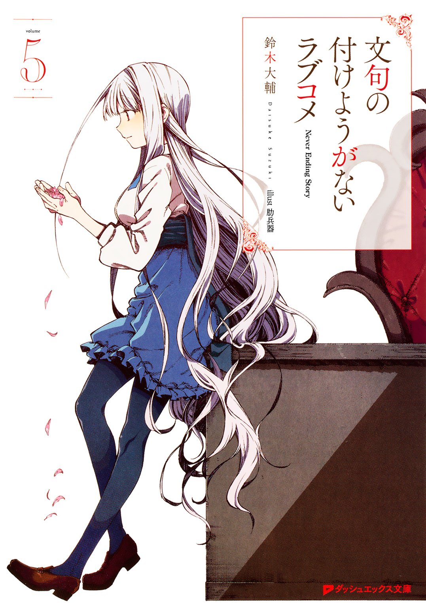
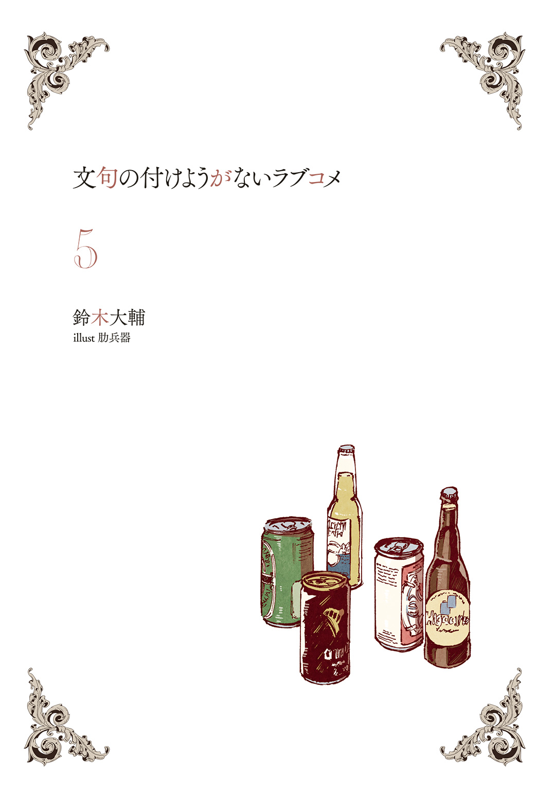
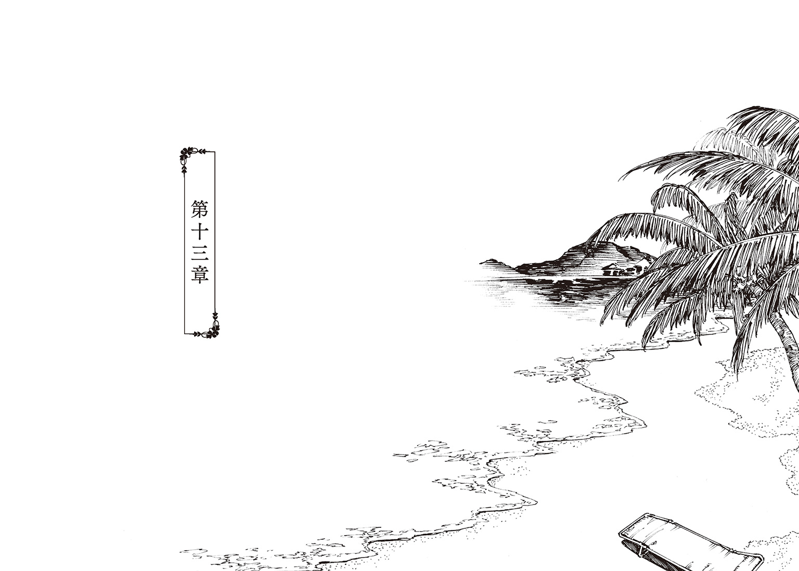
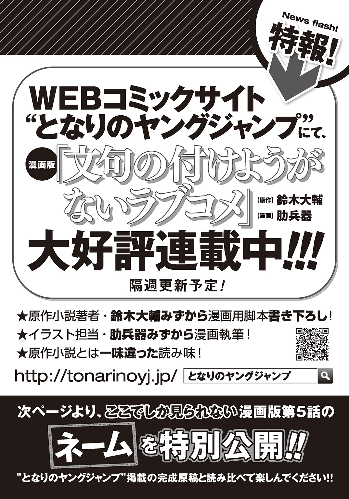
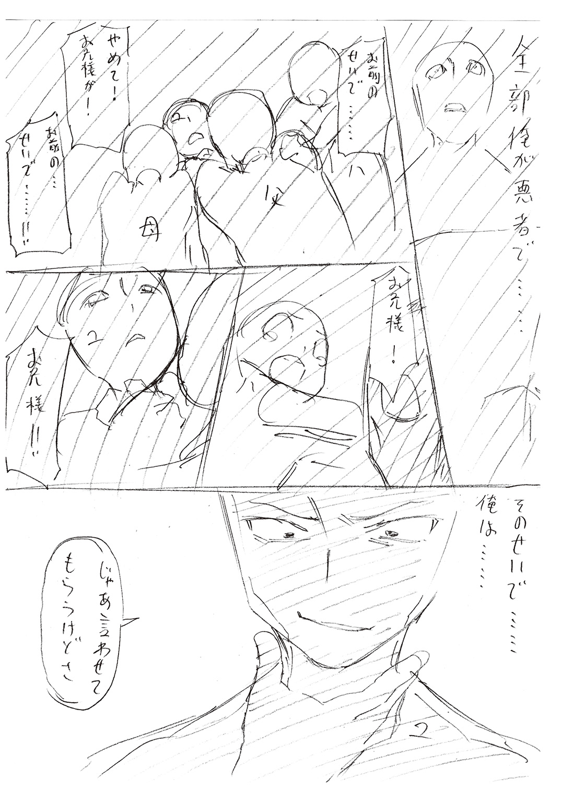

| 文句の付けようがないラブコメ 5 | |
| 鈴木大輔 | |

この本は縦書きでレイアウトされています。
また、ご覧になる機種により、表示の差が認められることがあります。

 ダッシュエックス文庫DIGITAL
ダッシュエックス文庫DIGITAL
文句の付けようがないラブコメ ５
鈴木大輔
第十一章
九十九機関について桐島ハルコは考え続けている。
†
九十九機関は世界を守る組織である。
と、少なくとも『世の中』ではそういうことになっている。もちろん彼らは表舞台に出てくることはない組織であり、ほとんどの人々はその存在すら認知することはないが。しかし彼らの存在を知る人間にとって、彼らはやはり〝世界を守る組織〟なのだ。
それは確かである。
確かであるはずだ。
ずっとハルコはそう思ってきたし、何度検証しても結論は同じである。
「ええまったく。結論は同じです。どう考えても」
だが彼女の直感はその結論に、わずかなほころびの気配を感じていた。
やはりおかしくはないだろうか？
九十九機関は個々の構成員が独立して動き、それでいて統一された意識の元で巧緻に連動することが可能な、いわばアメーバや粘菌に似た組織であり、同時に組織の体を成さない組織であり、ゆえに特異性なり独立性なりを保てている。組織の全貌を知るものは組織の上位者においてすら皆無であり、あのおチヨですらすべてを把握するのは不可能だ。
......と、いうことになっている。
理屈はわかる。
理論上ありうる話、にも思える。
だが本当に？
本当にそんなもの存在しうるのか？
アメーバや粘菌に似た組織とはいうが、あくまでも似ているだけであって、生物の免疫機能そのものではない。人間ひとりひとりで構成された組織が、いかなる洗脳なり強制なりを施されたとしても、あたかも機械のごとく精密にひとつの目的を果たし続けることなど、本当に可能なのだろうか？
「無理でしょう」
そう断じざるを得ない。
九十九機関というモノは確かに存在するのだろう。ほかならぬハルコの兄、桐島ユウキがその一員だ。天敵である小岩井クルミもまた所属し、活動している。もちろんあのいけ好かないメイドもだ。幼少の頃に兄をスカウトしにきた男もまた、九十九機関の末席に連なる者である。それ以外にも構成員は山といるのは疑いない。
しかし彼らは本当に存在しているのだろうか？
はっきり姿が見えるのは兄、小岩井クルミ、おチヨの三人だけ。明確な意図をもって動いているのも三人だけ。
もちろん調べればたどり着くことはできるのだ、九十九機関に所属している人間には。彼らにはそれぞれの人生があり、家族や友人があり、喜怒哀楽をもってこの世界に生きていて、世界の一部を立派に構成している。それは事実、なのだが。
「どうにもこう、なんと言いましょうかね」
鋭敏なハルコでもその感覚を言葉にするのは難しい。
ものすごく大ざっぱに言うと、何かにだまされているような、あるいは化かされているような、巧妙に注意を逸らされているような。そんな感覚と言うべきか。
あるいはもっと端的に言うなら。
この世界はあまりにも薄っぺらすぎる。
「わたしだけですか？ そんな風に考えるのは」
しかし彼女は確信を持っている。かの桐島ユウキをして『則天武后の生まれ変わり』と言わしめる妹なのだ。その点は間違いあるまい......とハルコは胸を張れる。
「まだまだ他にもありますよ」
ハルコにとって興味をひかれることが、である。なにしろ彼女は世界の仕組みを解き明かそうとしているのだ。いくらでも語るべきテーマはある。
たとえばそのひとつが、
『そもそも九十九機関は誰が作ったのか？』
という問いであった。
†
目を覚ますとおなじみの光景がそこにはあった。
「おはようございます」
にこりと笑うおチヨの姿。
見慣れた天井、壁の漆喰。背中に張り付くソファーの感触。
「お加減はいかがです？」
「......いまいちです」
「でしょうね。昨日はいつにもまして飲んでいらっしゃいましたから」
おチヨの淹れるハーブティーの香りが部屋に満ちる。
苦いような、酸っぱいような、不思議な香り。嗅いでいるだけでも身体から毒気が抜けていく気分。
「魔法みたいですね」
「なにがです？」
「おチヨさんの淹れてくれるお茶が。鼻から香りが入ってくるだけでも体力が回復していく気がします。いつも思いますがすごいお茶だ」
「ありがとうございます」
にこり。
愛想よく、それでいて型どおりに礼を言うおチヨ。ユウキは呆れ半分に感心する。これだけ完璧な微笑みを、いついかなる時でも自然に出し、それでいて微笑みしか見せることのない人間を、かつて他に見たことがない。
（化け物だな）
と心の底から思う。
もちろん彼女が人間であれば、というのが前提の話だ。むしろユウキはこのメイドが人間でないことを確信している。
「なかなか思い切りましたねユウキ様」
ユウキの向かい側に腰掛けながらおチヨは言う。
「プロポーズした相手を顔色ひとつ変えずに地獄へ突き落とすのは、そうそうできることではありません。さすがと申し上げておきます」
「ありがとうございます」
にこり。
最大限に愛想よく笑ってみるが、二日酔いもあってうまくいかなかった。いついかなる時も皮肉を受け流せる人間になりたいと思う。
「ですがおチヨさん。あなたの方こそさすがだと思いますよ私は」
「どのあたりがです？」
「事情をよく知っていらっしゃる」
ユウキが神鳴沢セカイを『あの部屋』に押し込んだのは昨夜のこと。それからお務めを済ませた神に酒を付き合わされ、たったいま目覚めるまで、おチヨとは顔も合わせていなかったはずなのだ。
「神から聞いたのですか？ 昨日の夜のこと」
「いいえまさか」
首を振って、
「いまのあの方にとってわたしは敵です。それも不倶戴天の、決して和解することのない敵ですからね。個人的な事情などは話していただけるはずも」
「なるほど」
このおチヨなるメイドは道具だ。
世界を維持するために冷徹に回り続ける歯車であり、神鳴沢セカイを誰よりも酷使してきた人物である。身の回りの世話以外の会話を神と交わす間柄ではない。にもかかわらず昨夜の一件を知っている。
桐島ユウキと神鳴沢セカイが、相容れないお互いの立場を確かめ合った出来事を。
つまりこの御座所、神の住まう屋敷で起きることの一切は、メイドの手の内ということである。すべては筒抜け。隠しごとなど夢のまた夢。
（当然だな）
ユウキが同じ立場だったとしてもそうする。が、それにしても手際がいいというか、抜け目がないというか。
「それでどうされるのです？」
自らもハーブティーを味わいながら、おチヨ。
「首尾よく神の信頼を勝ち取るまでは上手く行きましたが、これでまたすべてが振り出しに戻りました。ユウキ様の今後の方針は如何？」
「如何もなにも」
苦い顔でユウキは答える。
「私の方針は最初から決まっています。九十九機関に身を預けた時からずっとそうです。この世界のかたちを保ち続けるのをすべてに優先させます。たとえ結婚を申し込んだ相手だろうと、そのための生贄に捧げます」
「さすが。ご立派でいらっしゃいます」
「元から覚悟していたことですからね。こうなったら最後までまっとうしますよ、外道としての人生を」
「果たしていつまで続くでしょうか」
「もちろん私の命が尽きるまで。自分だけ楽をするつもりはありません」
「いえ。そういう意味ではなく」
にこりと微笑む。
気のせいだろうか。完璧な微笑が売りのメイドが、わずかに別な味をチラつかせたように見えた。苦笑、あるいは失笑のニュアンス。
「ユウキ様の命よりも早く世界の方が尽きてしまうでしょうから。ユウキ様のおっしゃる外道としての人生をまっとうするのも、そう遠い先ではないと思われます」
「......どういうことですかそれは」
「我が主は口にしませんでしたが。この世界の仕組みはもうじき限界を迎えます」
「限界を？ ......え？」
「この世の穢れを浄化する我が主の力が、間もなく尽きてしまうということです。もしくはそれより先に我が主の命が尽きることでしょう。なにしろずいぶんと無茶をしてこられましたからね、むしろ長く保った方ではないかと」
「............」
呆然と固まってしまったユウキは責められまい。
すべての否定と言ってよかった。彼は世界を守るためにすべてをなげうってきたし、神鳴沢セカイは立場の壁を超えてまで結ばれようと願った相手である。その両方が一度に失われるなんて。
「マジか......」
ややあってユウキは両手で顔をおおった。
あまりにもあっさり明かされたその事実は、かえってそれゆえに突き刺さる。噓や冗談を言っているようには見えなかった。むしろ真実であった方が自然に思えるし、すべての点が線になるのだから始末に悪い。
なにより直感が告げている。メイドの発言は事実だと。
世界は終わる。
そしてセカイもまた終わる。もう間もなく。
――無言の時間が流れた。
ユウキは考える。
おチヨはハーブティーを静かに舐める。
「あなたは」
ややあってユウキが重い口を開いた。
「どうするつもりなのですかおチヨさん。世界が終わるということは、あなたの存在意義も失われるということでしょう？ いや、そもそもあなた自身もまた消えてしまう。それでいいのですか？」
「それでいいのかと言われましても、世界が終わるという結果はもう見えていますし。わたしの一存でどうこう変えられる未来でもありません」
「ちょっと諦めがよすぎませんか？ 我々九十九機関は世界を守るためにあらゆる手段を尽くすのが役目なのでは？」
「それは少し違いますね。わたしは利害関係が一致するからあなたがたと行動を共にしているだけですので。いささか立場は異なるかと」
頭をかくと同時にため息をつくユウキ。
メイドの主張は正しい。彼女はもとよりそういう特異な存在であった。人間の常識で話を進めようとしても意味はない。
「わたしは自分の務めをまっとうしますよ」
おチヨは言った。
いよいよ冴え渡る完璧な微笑。
「何があってもこの世界を守りたい、と我が主はおっしゃいました。その務めを可能な限り忠実に叶え続けるのがわたしの務めです。世界が終わるまでその志にわたしは殉じ続けるでしょう。そして世界が終わるなら、あるいは我が主が終わってしまうなら、そこがわたしの終着点ということになります。わたしはそれで満足です」
「それで満足？ 本当に？ それでいいんですかあなたは。それじゃけっきょく誰も幸せになれない」
「すでに申し上げたはずです。この世界においてわたしは揺るぎません。わたしと我が主がかつて定めたルールを遵守します。わたしはそのために存在する道具です」
平行線だった。
どこまでいっても聞く耳を持ってくれそうにない。
「どうぞご安心を」
ユウキの表情をどう解釈したものか。
得たりという顔でメイドは頷き、
「わたしのルールに触れない限り、あなた様の成そうとすることに手出しはしません。あなた様は、あなた様が成すべきと考えることを成してください。それこそが我々の進むべき道であるかと」
「私の邪魔はしない、と？」
「はい。この世界を守るという目的が一致する限りは、ですが」
「なるほどありがとうございます。そうやってルールを明確に示してもらえると、私としてはやりやすい」
「いえいえ礼には及びません。その程度の便宜は図らせていただきますよ。なぜならわたしはユウキ様のことを好ましく思っていますからね」
「はは。告白ですかそれは」
茶化したつもりである。気が滅入っていたし、ほとんど無意識に近い言葉だった。
ゆえにユウキは、返ってきた言葉に絶句することとなる。
「ええ。そう受け取っていただいてもかまいません」
「............」
まさしく絶句であった。
継ぐべきセリフが見つからない。若さゆえの未熟、と笑うのはさすがに酷だろう。
「ご安心ください」
一方のおチヨは完璧な微笑を崩さなかった。こちらは疑う余地なく年の功である。
「だからと言ってどうということはありません。繰り返し申し上げているとおり、わたしにとってはただひとつのルールがすべて。極端に言えば、それ以外のすべては無意味なことですから」
「......そうですか。なるほど」
「軽く流していただければよろしいのに」
くすくす。
おチヨは微笑する。
希有と言っていいだろう。それは彼女らしからぬ、ひどく隙の多い微笑だった。まるでどこにでもいる年ごろの娘が見せるような。
「修行が足りませんよユウキ様。そんな有様では今後が思いやられます」
逆に茶化された。
とはいえ嫌味はない。
「では最初の質問に戻りましょう」
そして気の利いた返事を返す前に、メイドはいつもの微笑に戻った。成り行き、ユウキも言葉の続きを聞く。
「ユウキ様の今後の方針は如何？ 何を考え、どう行動されるおつもりなのでしょうか？ 世界が終わり、我が主も終わろうとしている今、わたしはとても興味があります」
†
いっぺんに酔いは醒めた。
まさしく世界の一大事と言っていいだろう。これ以上に緊急を要する事態は、おそらく他に考えられまい。
そして残念ながら、ユウキひとりの手には余る事態でもあった。
こんな非常時にこそもっとも頼りたいのはおチヨなのだが、彼女は傍観者の立場を明確にしている。頼ることはできそうにない。
となれば次なる選択肢は。
「そりゃわたしだよねー」
小岩井クルミである。
「にしても困ったね。ちょっと手の施しようがないっぽいんだけど」
そしてさっそくのお手上げだった。
私立叢雲学園高等部、二年Ａ組の教室。放課後。
プリントの仕分けをしながら、ふたりの学級委員は今後の対策を検討している。
「そっかー、世界が滅びちゃうかあ。無理もないよねー。すっごい無理してたもんねー」
「納得してる場合じゃないだろ」
ユウキは呆れ気味に、
「世界が滅びるんだぜ？ たぶんホントにマジで。俺も消えるし小岩井さんも消えるんだぜそんな遠くない先に。余裕かませる状況じゃないと思うんだけど」
「じゃあとりあえず、世界が滅びるっていう説が本当なのかどうか検討してみる？」
ホッチキスを巧みに操りながら、クルミ。
余裕ありげである。もっともここで取り乱されても困るわけで、さすがは九十九機関の一員、さすがはユウキの上司、ということになるのだが、
「結論から言うと本当だと思う」
やはり余裕ありげに彼女は言った。
「もちろんはっきりした根拠があるわけじゃないよ？ 穢れを浄化する仕事は神様の専売特許だからね。データも少ないし仕組みも解明できてない。ついでに言えば、世界的にわりと政情は安定してるし、気候とか地殻変動なんかも致命的な変化は見られないし」
九十九機関は世界の平和を司る組織。
当然ながら世の中のあらゆる動向に対しては神経を尖らせている。何かしら明確な徴候があればユウキにも情報は入ってくる。
「普通に考えたら、世界はまあしばらくは安泰かな。どんな学者でも政治家でも同じ答えを出すと思う。むしろ怒り出すと思うよ？ この状況で破滅が訪れるなんて非常識だ、一体どこに目を付けてんだ、ってね」
かちぱちかちぱち。
熟練の手つきでプリントを束ねていくクルミ。まるでもう何十年も、あるいはもっとずっと長い間おなじ仕事をしているかのように。
「でもわたしたちは九十九機関だから。やっぱ感じちゃうよね。けっこう敏感にできてるんだよ何だかんだいって。なんか雲行きが怪しいってのはさ。うん。どうしてもね、ほとんど本能的にわかっちゃう」
クルミは淡々とした様子だった。
そのことにユウキはおどろく。彼女の声音自体はむしろ弾んでいるくらいなのだ。なのになぜ、この上司の言葉はこんなに澄んで聞こえるのだろう？ まるで哲学者か宗教家が、この世の真理を解き明かしているかのような。
「だからわたし個人としてはね、そういう展開はいつ起きてもおかしくないと思ってた。たぶん九十九機関全体の見解も同じになると思う。実際ユウキくんもそう思ってるだろうし、おチヨさんもそう思ってるだろうし」
おら一年ー！ 声出せ声ー！
ざあああーーーっす！
窓の外からは運動部のかけ声。冬が近づき三年生が引退するこの時期、残された後輩たちはむしろ活気づき始めている。
「さて。どうするのかなユウキくんは」
興味津々、という様子でクルミはのぞき込んでくる。ホチキスを操る手を止めずに。
「小岩井さんの方こそどうするんだよ」
ユウキは渋い表情で、
「ってか、まさにそれを相談してるんだけど。小岩井さんだって九十九機関だし、しかも俺の上司なんだからさ。方針なりなんなり示してくれないと」
「だってわたしの手に負えないもん」
あっさり白旗を揚げるクルミ。
「わたしだけじゃなくて九十九機関の手に負えないよね。これまでは神様をどうにかこうにかなだめすかして、あれこれいろんな方法を使いまくって、けっこう長いこと世界の秩序を保ってこれたけどさ。肝心な神様が壊れちゃうんならね、そりゃもう無理ってなもんです。お手上げですお手上げ」
「......そう簡単にお手上げしていいもんじゃないだろ？」
「だね。なのでひとつしかないわけよ、わたしにできることっていったら。それが何かわかる？」
「いや。わからん」
「簡単だよ。ユウキくんにお任せする」
あっさり彼女は言う。
ユウキはいよいよ渋い顔をする。
「他力本願すぎないか？ それって」
「うん。でもさ、どうもそういう結論しかなさそうなんだよね」
肩をすくめて、
「わたしはユウキくんの上司だからさ。立場上いろいろ報告は受けてるわけで。ユウキくんと神様との間に何が起きてるかは、逐一ぜんぶ知ってるわけよ。そのはずなわけ。別にユウキくんは噓の報告とかしてないよね？」
「してないよ。俺だって立場はわきまえてる」
「だったらうん、やっぱ結論は変わらないな。ユウキくんに一任。それしかないよ。情けない話だけど」
あははと笑う。
笑うしかない、とでも言いたげに。
「にしてもさ、なかなかやるよねーユウキくんも。神様のお誘いを蹴っちゃうわけだもんね。あれでしょ？ 彼女のお誘いって、言ってみれば『ふたりでいっしょに新しい世界の神になろう』ってことでしょ？」
「かな。まあそうだな」
「いやーすごいよ。断れないよそれ。嫌いな相手からのお誘いならともかく、好きな相手からだもん。わたしならそっこーでＯＫだね。むしろ土下座して拝んじゃうね。ありがとうございます是非お願いします、って」
と言って、クルミは平伏するポーズと手を合わせるポーズをする。やたらとオーバーアクションで、「ははーっ」と声まで出して。
それから急に真顔になり、
「いやすごいね神様。世界とか丸ごと作り替えられちゃうんだ？ いやはや、まさしく神ですな」
「ホントそうだよな――って言いたいところだけど。なんか引っかかる言い方じゃね？」
「だね。実際に引っかかってることがあるからね」
言って彼女は両肘をつき、手の甲にあごを乗せ、にやりと笑う。
判断に困る仕草だ。真面目モードなのか茶化しているのか。それとも両方か。
「世界を作り替えるなんて本当にできるのかな？」
「............」
「神鳴沢セカイはすごい力を持ってる。ひとりでずっと世界の形を保ち続けてるんだから、そのことは証明されてる。でも彼女がそれ以外のすごい力を持ってるなんてこと、これまで一度も報告されたことがないよね」
「............」
「もちろん状況が特殊な点は考慮しなくちゃいけない。もうすぐ世界が滅びちゃうわけだし、ユウキくんっていう特別な人が相手だし。そもそも神様の存在自体がよくわかってないこと多いしね」
「............」
「でもそういうのを最大限に考慮しても、ただのブラフかもしれないっていう可能性は真っ先に浮かぶよね？ むしろなんかの駆け引きの材料として言ってるだけ、って考えた方がしっくりくるよ」
「............」
「神様にとってユウキくんは敵なんだ、ってことを忘れないで。どこまでいっても、たとえ結婚してても、ぜったい交わらない、交わっちゃいけない何かはあるんだよ」
どうやら真面目モードの方らしかった。
ユウキはすぐに反応できない。ややあって「......わかってる」とつぶやくのが彼の精一杯だった。
「あとね。わたしちょっと怖い可能性も考えてるんだけど」
まだあるのか。
内心のうんざりを押し殺しながら、ユウキは黙って先を促す。
「神鳴沢セカイがブラフじゃない、本当にすごい力を持ってる可能性、っていうのも当然あるわけで。それは世界を丸ごと作り替える力だけに限らないわけだよね。なんせ神様だからね。別に不思議じゃないよね」
「つまり？ 何が言いたいんだ？」
「あんまり考えたくないんだけどさー」
ホチキスを操る作業に戻りながら。
察しのいい上司は、やはり淡々とした声で。
「『世界が滅びる』んじゃなくて『世界を滅ぼせちゃう』んじゃないかなー、とか。神様ってのはそういう力を持っててもおかしくないんじゃないかなー、みたいな。そんな可能性も考えちゃうのよね、わたし」
おら声出せ一年ー！
ざあああああっす！
ユウキは固まったまま何も答えられず、放課後の教室には運動部のかけ声と、ホッチキスの立てる乾いた音がユニゾンする。
第十二章
そもそも九十九機関は誰が作ったのか？
†
その答えには歴史をひもといていけばたどり着けるはずだ。神を管理・運営するという目的をもって構成された以上、九十九機関が自然発生的に出現したはずはない。必ず主導する誰かがいたであろうから。
だが現実として『九十九機関を作った誰か』は存在しないことになっている。功労者、もしくは英雄とさえ呼んでいいはずのその人物について、記録はひとつも残っていない。
あるいはそれは個人の成した仕事ではなく、複数の誰かによって共謀された計画だったのだろうか？
ひとりの誰かが成し遂げた業績ではないために、歴史にその名が刻まれなかった――そういうことなのだろうか？
不自然な話ではない。似たような事例はいくつもある。なにしろ世界中にあまねく存在し、それでいて空気のように実体の見えない組織なのだ。むしろ曖昧模糊とした結末にたどり着くのは自然な流れにも思える。
「本当に？ そうでしょうか？」
ハルコは自問してみる。
が、これは無意味な自問だ。というのも彼女の中ではすでに答えが出ている。
九十九機関は間違いなく、誰か特定の者によって、恣意的に作られたものだ。
と同時に、その誰かの名が歴史に残っていないのも当然なことなのだ。なぜならその誰かは人間ではないだろうから。
「ちょっとしたインチキですよねまったく。人間の世界のことは人間にだけ任せてほしいものです」
愚痴りたくもなる。人間以外のなにかに人間のモラルを求めても無駄だろうが、それでも〝そいつ〟はこちら側に干渉しているのだ。超越者らしくもっと手加減なり遠慮なりしてくれても――
「まあこれこそ愚痴ですね」
首を振り、ハルコはさらに考える。
人間ではない超越者とは何か？
具体的にそれが何なのかを特定するのは難しい。だがそういったものが何と呼ばれるのかは誰もが知っている。
いわゆる『神』というやつだ。
あるいは悪魔と呼んでもいいし、妖怪、化物、怪異、どんな呼び方をしようと構わない。とはいえやはり『神』と呼ぶのが一番しっくりくる気がする。ゆえに彼女はさしあたりそれを神であると仮称する。
「で、ここが肝心なところですが」
それらを前提としてハルコは考える。
まさしく肝心な問いだ。
九十九機関を作った神とは、いったい何者であるのか？
†
「神は何者なのかって？ 相変わらず難しいことを訊いてくるなお前は」
妹の問いかけにユウキは顔をしかめる。
「いやホントに難しいぞそれって。ていうか本気で考えても答えは出ないよな。簡単に出るようなら哲学とか宗教は要らんもんな」
「まあいわゆる思考実験だと考えていただければ」
桐島家の庭園。恒例のお茶会。
ぱたぱたとハルコは手を振って、
「難しく考える必要はありません。どうぞ直感で答えてください」
「と言われてもな」
さらにユウキは顔をしかめる。
「お兄さま、お遊びですよお遊び。兄と妹が過ごす素敵なお茶会を、ほんの一時だけいろどる、ささやかな問題提起です」
「小学生と高校生の会話だと考えると、むしろちょっとシュールだけどな」
「お兄さまは九十九機関に身を置いてますし、わたしは桐島製薬を事実上の支配下においています。むしろこのぐらいエスプリの効いた会話は当然かと」
「そうかねえ。そうは思わんけど」
「ちなみに妹と一夜の火遊びをするつもりなら、いつだって歓迎ですので。その際はひとことおっしゃってくださいね？」
「気遣いをありがとう。でもだいじょうぶ、その機会は永遠に来ないから」
「夜じゃなくて昼からでも大丈夫ですよ？」
「朝からだろうと夕方からだろうとやらないよ」
いつもの他愛ない会話を挟んでから、ユウキは紅茶をひとくちすする。
「神は何者か。だよな？」
「はい」
「正しい答えなんかたぶん存在しない、ってのが前提だよな？」
「その認識で構いません」
「だったら俺はこう答えるかな」
向き直り、真面目な顔で。
彼は気負った様子もなく回答する。
「神は馬鹿野郎だ」
「......ほうほう。神は馬鹿野郎であると。そのお心は？」
「いや。気の利いた答えはなにも返せないよ」
笑って、
「とりあえずさ、俺の知ってる神、俺の知らない神、ぜんぶ等しく。俺ら人間からみたらどいつもこいつもふざけた大馬鹿野郎なんだよな。役に立つこともたまにはしてくれるけど、たいていの場合はやりたい放題で迷惑をまき散らす。祈っても気の向いた時しか応えてくれない。そのくせそいつらは神だ。人間にとっては救いであってほしい存在なんだよな。ほんとこの馬鹿野郎が、って言いたくなる――まあ人間側の勝手な考えなんだけど」
ふん、とユウキは鼻を鳴らす。
目つきの悪い彼がそんな仕草をすると、思いのほか凶悪になるのだが、
「でもさ。人間ってのは馬鹿野郎が嫌いじゃないんだよな」
「そうですか？ わたしは馬鹿な人が等しく嫌いですが」
「でも俺は嫌いじゃない」
妹を軽くいなしつつ、
「それに馬鹿野郎だからこそできることもある。馬鹿野郎だから愛すべき隙もある。だから神はいつだって人間のそばにいる。だから人間も神に寄り添う」
ティースプーンを弄びながらユウキは語る。語りながら答えを探るように。
「不思議な関係ですね、って周りから言われる夫婦みたいなもんかな？ 周りも不思議に思ってるし、当人たちもそう思ってるし、いつだって仲がいいわけでもない。でも離れることは考えにくい」
冬が近づいている。
テーブルの下には炭火が熾る火鉢。庭木には椿の赤がちらほら。
「......まあそんな感じ？ ちょっと上手くまとまらなかったかな話が」
「いえ。とてもユニークな考え方だと思います。さすがお兄さまです」
「そりゃ褒めすぎだよ」
「不思議な関係、という表現はとてもしっくりくると思いますよ。確かに神と人間はつかず離れず――月と太陽のようなものですか」
「かな？ そういう解釈もあるとは思う」
「ちなみにわたしとお兄さまも不思議な夫婦関係ですよね？ 兄妹でありながら愛し合う、愛し合いながらも身体の関係はないという、とても奥ゆかしい夫婦です。まさしく神と人間に近い――いえむしろ、わたしとお兄さまこそが神話の奥義を体現している、と言っても過言ではないかもしれません」
「いや過言だと思うぞ？」
いちおう釘を刺しておくと、ハルコはにこりと笑って、
「ところでお兄さま」
「ん？」
「近ごろいろいろお悩みのようですが。それも深く深くお悩みのようですが。何かわたしに相談事があるのでは？」
「ん」
ユウキはティースプーンを弄り続けている。
顔には苦笑。視線は手元に向けたまま。
「ハルコ」
「はい」
「お前はほんと察しがいいよな」
「それが取り柄ですので」
堂々と言ってのける妹に、やはりユウキは苦笑。
「じつはお前に頼みごとがある」
「なんなりと」
「頼みごとの半分は悪い話じゃない。もう半分は、もしかするとお前にとっては悪い話かもしれない。でもまあ、トータルでみたらいい話だ。それは保証する」
「ふむふむ」
「ちなみにもうほとんど根回しは済ましてる。あとはお前と、もうひとりのオーケーをもらうだけだ」
「ほうほう」
ハルコは紅茶をすする。
彼女の表情からは何も読み取ることはできないが、心の準備を整えている様子はうかがえる。
「で？ お兄さまのお心は？」
「うん。じつはだな」
ユウキは思惑を語った。
ハルコはしばらくのあいだなんとも言えない顔をしていたが、最終的にはその申し出を受けた。
†
「――入れ」
ノックをすると簡潔な許可が返ってくる。
神の御座所。神鳴沢セカイの居室。
「失礼します」
物音ひとつ立てず、ユウキは部屋に踏み入る。
葉巻の煙。そしてアルコールのすえた香り。いつもと変わらない神の居場所。
「何日ぶりだ？」
本のページに目を落としたまま神は問う。
「一週間ぶりか十日ぶりか。しばらく顔を見なかったな」
「はい。仕事をしておりました」
「仕事？ わたしのもとに来る以外に貴殿の仕事があるのか？」
「はい。あなたにも大いに関係する仕事でしたから」
「そうか。まあいい適当に過ごせ」
気の乗らない声で許しを与え、本のページをめくる。敵意も害意もないが、そのかわりに好意もない。ひどく事務的だった。
だがこれはむしろ神の温情と言っていいだろう。ユウキは彼女に、敵意も害意も向けられる覚えがある。
つまりはまだ『見込み』がある。
「神よ」
さっそく本題に入る。
「今日はとある提案を持ってきました」
「............」
一瞥をくれて、ふたたび読書に戻る神。
続けろ、という意味だとユウキは受け取った。続ける。
「その前に確認なのですが。私とあなたはまだ別れているわけではない、という認識でよろしいでしょうか？ 離婚しているわけでもなければ破局しているわけでもない、と」
「............」
ふたたび一瞥をくれる神。
何をいまさら、という色がありありと出ている。
ユウキはめげない。
「よろしいでしょうか？ そのような認識で」
「......ああ。それでよいのではないかな桐島ユウキよ。確かに別れた記憶はないし離婚した記憶もない。まあそもそもプロポーズを受けたというだけで、結婚に関してなんらかの契約を交わしているわけでもないがな」
「はい。今日はまさにその点についてのお話です」
「............？」
神は胡乱げである。
ということはつまり、関心はあるということだ。チャンスはもらえた。逃す手はない。
「単刀直入に言います」
迷いなく一直線に申し出る。
「新婚旅行をしませんか」
「新婚旅行だと......？」
「はい。ぜひお付き合いいただきたく」
「............」
神は面食らったようだ。
ページをめくる格好のまま手を止めて、まばたきも忘れてユウキを見つめている。
「プロポーズを受けていただきましたが、これまで夫らしいことは何もしてこれませんでした。まさにいまさらではありますが、ぜひとも」
「............」
やはり神は無言。
しばしの間を置いてから、
「ふう」
と彼女は声に出してため息をつき、
「いろいろ言いたいことはあるが。どうしたものかな」
「どうぞなんなりと。ご懸念があればうかがいます」
「では言わせてもらおう。まず第一に貴殿は知らぬだろうが――」
「世界が間もなく滅びることであれば知っています」
「............。ではわたしのことについては」
「知っています。あなたが間もなく力尽きること。ゆえに世界も終わるということ」
「............」
ふたたび神は黙った。
ユウキは続ける。
「ちなみにこの件については九十九機関の総意である、と考えていただいて結構です。九十九機関はあらゆる方面から私たちの新婚旅行を支援します」
「どういうことだ......？」
「たとえば我々はあなたに〝お務め〟をしていただくのが仕事ですが、その点も今回に限っては考慮に入れる必要はありません。あなたには完全な自由が待っています。くそくらえな〝お務め〟をひとりで背負い込むこともない。大して広くもないこの屋敷で酒と葉巻と読書だけの日々を過ごすこともない」
「............」
「まあもともと、あなたがその気になればいつだって務めを放棄することができたのでしょうが――その点はただただ恩に着るばかりです。人類はあなたに大きな借りがある。とても返しきれない大きな借りが。ほんのわずかではありますが、ようやくそれを返すことができる、ということです」
神はじっと目を細める。
ユウキは堂々と視線を受け止める。
「桐島ユウキ」
「はい」
「なにを考えている？」
「新婚旅行の計画です」
「うそはよくない」
「そう思うならいまからでもこの屋敷を出て、どこかにお茶でも飲みに行きませんか？ たとえばウチの実家などおすすめですよ。おチヨさんに負けないくらいのお茶を出せると保証します」
「............」
神は葉巻に火を付けた。
そして黙り込む。ユウキの提案に戸惑っている様子がありありと見える。
「気に入らないな」
紫煙をたっぷり吸い、ゆっくり吐き出してから。
神鳴沢セカイは投げ捨てるように言う。
「つまりは退職金がわりということか？ 長い間お務めご苦労様です、どうかこれで短い余生の慰みとしてくださいませ、というわけか？」
「たとえはした金でも受け取っておくべきです。このまま黙って破滅を待つよりは前向きだと思いませんか？ 与えられたものを有効に使うべきなのは、神にとっても人間にとっても同じでしょう」
「なにを企んでいる？」
「新婚旅行の計画です」
「その言葉を真に受けるとでも？」
「お疑いはもっともですが、実際に試してみるのがよろしいかと」
ユウキは手を差し伸べる。
「すでにあなたは自由ですので。外に出てみましょう。もしよろしければそのままウチの実家にも寄ってみませんか」
†
神の歩みはひどくゆっくりで、屋敷の門までたどりつくのに何分もかかった。
「お待ちしておりました」
待っていたのは鉄壁の微笑みメイドである。
「わたしもお供いたします。さあどこへ向かいましょう我が主？」
「お供だと？ おチヨが？」
神はユウキをにらみつけて、
「あっさり馬脚をあらわしたな貴殿。この女がついてくる先に安楽などありえない。折を見てわたしを連れ戻そうとするに決まっている」
「いえ。彼女はただの付き添いです」
ユウキはくすりと笑って、
「付き添いというか、あなた専用の看護師です。あなたは脚がお悪い。それにいろいろなお薬も状況に応じて処方する必要があるでしょう。その際にあなたをサポートする役は、彼女が適任かと」
「そういうことです」
とおチヨが応じて、
「邪魔だてはいたしませんから、どうぞご自由に屋敷の外を堪能してくださいませ。万が一どこかで倒れるようなことがあっても、責任をもってわたしが面倒をみさせていただきますので」
「......ふん」
不機嫌そうに鼻を鳴らしてから神は歩き始めた。その後ろをユウキとおチヨがつかず離れずついていく。
あらかた葉を落としている桜の木。家々の庭先には南天の赤い実が鮮やかに色づき、ときおり柿の木が実を付けているのも見える。
初冬の静かな町並み。
おだやかな陽だまり。
「ふん」
神は左右を見回しながら歩いている。
警戒している様子はありありとうかがえるが、好奇心もまた隠せずにいるようだ。
会話もないまま三人で歩く。
ほどなくして人通りの多い道に出た。同時に駅舎と線路も見えてくる。
「車も用意はしてありますが」
ここからユウキが先導する。
「電車で行くのもたまにはいいものです。それで構いませんか神よ？」
「......任せる」
警戒よりも好奇心よりも緊張の度合いが勝ってきたようだ。神の表情が目に見えて硬い。歩調もなんだかぎこちない。
切符を買い、改札をくぐり、電車に乗る。
長椅子に揺られている間も神鳴沢セカイの表情は硬かった。顔色から血の気が引いている。冷や汗まで額に浮いているようだ。
しばらく移動して電車を降りた。
緑が多く空が広い街だ。神の御座所とは別の高級住宅街である。
「桐島ユウキ」
「はい」
「ここで貴殿は生まれ育ったのか」
「はい」
「ふむ。そうか」
気のせいか表情が少し和らいだようだ。駅を出たところで街の雰囲気を眺めながら、感慨深げに「ふむ。ふむ」とうなずいている。
歩く。
古い家並みがつづく。葉を落とした桜、南天、柿の実。
やがてひときわ大きな邸宅にたどり着いた。
「こちらが私の実家です」
「ほう」
神が目を細める。
でかい。
右に左に長々とつづく外壁。森のごとく豊かに茂る庭木。
「広いな」
「はい」
「ものすごく広い」
「広いです。実家の稼業がそこそこの製薬会社ですので」
「いいところのお坊ちゃんなのだな」
「恐縮です」
と頭は下げてみたものの、神はいささか不満そうだ。『我が居宅より大きいとは生意気な』とでも言いたげである。
家の門をくぐり、玄関へは向かわずそのまま庭に出る。
「うわーお!? ホントに来たよ！」
神を出迎えたのはテンションの高い声。
「やほーいユウキくーん。こっちこっち。お邪魔してるよん」
小岩井クルミだった。
それに桐島ハルコもいる。こちらは不機嫌そうな仏頂面でテーブルに腰掛け、まずそうに紅茶をすすっている。
「ほらほら早くこっち来て。お茶会にしようよお茶会に。ほらほらハルコちゃんも神様をお出迎えしよーよ？ いつまでもそんなブサイク顔してないでさ」
「誰がブサイクですか失礼な！ わたしはいつ何時だって美少女です！ まったく、他人の家に招かれておいてよくそんな口がきけるものですね？ やはりあなたはお兄さまにはふさわしくな――」
「はーい神様こっち座って！ 待ちくたびれちゃったよわたし。あ、ちなみに初めましてです、わたし小岩井クルミっていいます。九十九機関です。それからこっちが桐島ハルコちゃんで、ユウキくんの妹さんで、すごいブラコンです。さあさあ座って座って」
クルミはテンポが速い。
神鳴沢セカイは目を白黒させているうちに座らせられ、すぐさまお茶やらお菓子やらが並べられる。
「えーとそれでは」
しかもクルミは仕切り屋だった。
ユウキとおチヨも急かして座らせ、こほんこほんとせき払いしてから、
「さっそく神様歓迎のお茶会を開きたいと思います。たくさん飲んでたくさん食べましょう。お茶が嫌ならお酒もあるし、お腹空いてるなら食事も用意できるから。あと禁煙じゃないから葉巻も吸って大丈夫。というわけでよろしくね。かんぱーい！」
なぜか乾杯までする。
ユウキは苦笑いで、おチヨは変わらぬ微笑で、ハルコは口をへの字に曲げて、神はやっぱり戸惑いながら。みんなで「乾杯」と唱和した。
「いやーというわけで始まっちゃいましたね、神様をゲストに迎えてのお茶会！ いやいやまさかこんな展開になるとはね、ちょっと前までは想像もしなかったよ。ねえユウキくん？」
「まあな。俺も実現できてうれしいよ」
「わたしはちっともうれしくありませんよお兄さま？ このお茶会はわたしとお兄さまだけの特別なお楽しみだったはずでしょう？ そこに小岩井クルミという異分子が紛れ込んだだけでもテーブルをひっくり返したくなるのに、さらによくわからない闖入者がふたりも......しかもそこの髪の白いのは神様ですって？ おまけにお兄さまと結婚したなどと詐称しているのでしょう？ そんな不埒者を我が家に招き入れただけでなく、お茶までご馳走するなど......盗人に追い銭とはこのことです」
「まあまあハルコ。お兄ちゃんからの一生のお願いだから。ご褒美も用意するから」
「絶対ですよお兄さま？ 今回ばかりは頭撫でと抱っこでは許してあげませんよ？ きっちり肉体関係で清算してもらいますよ？」
「まあまあハルコちゃん。今日はゲストがいるんだからさ、そっちを立ててあげよーよ。ハルコちゃんはホストの側なんだから。あーそれとおチヨさん？」
「はい。なんでしょう小岩井クルミさん」
「今日はいいですよ？ メイドさんの仕事しなくても。なんかさっきからあれこれやってくれてますけど、あなたも今日はゲストですから」
「いえいえ、これがわたしの仕事ですから。この方が落ち着きます。ぜひみなさまのお世話をさせてください」
「おっけーそういうことならそれで！ さあさあ飲もう飲もう！ 神様お酒好きなんでしょ？ 飲み比べしよう飲み比べ。わたし飲めないけどね！」
「............」
神は苦虫をかみつぶしたような顔をする。
しばしの逡巡。そして彼女が何かを言う前に、
「新婚旅行はこのメンバーで行く予定です」
ユウキが言った。
「............」
神は意表をつかれたようだった。それも道理、普通の新婚旅行は夫婦ふたりだけで行くもの。そこに外野が何人も、おまけに女ばかりがついてくるとは。
「にぎやかな方がいいかなと」
ごく真面目な様子でユウキ。
「それにおチヨさんがいないと身の回りのことがおぼつかないでしょうし。小岩井さんとハルコはこう見えて優秀ですから。どこへ行っても最高のコーディネートをしてくれますよ」
「ちょっとお兄さま。わたしをこんなちんちくりんの小間使いにしないでください。わたしはあくまでもお兄さまのお供として付き添わせていただくのです。白髪女のために働くつもりはありません」
ぷいっ、とそっぽを向いて、限界までほっぺたをふくらます。ふくらますがそれ以上のクレームはつけない。ユウキとの交渉があらかじめ成立していたということである。
「............」
神は口をつぐんでテーブルを見つめている。
やがて「ふう」と小さく息をついてから、
「わかった。話に乗ろう」
と同意した。
「どうせわたしは貴殿らにこき使われるだけの存在なのだ。思うとおりに踊ってやろうではないか。好きにするといい」
「じゃあそうする！ いえーい！」
反応したのはクルミである。
席から立ち上がり、紅茶のカップを高々とかかげて、
「今日はパーティーだ前夜祭だ！ 無礼講も上等だ！ 飲むぞ飲みまくるぞー！ そして飲ますぞー！ お前ら覚悟しろこのやろー！ うえーい！」
†
そしてクルミが真っ先に音を上げた。
「うーん......もう飲めない......」
最初の威勢はどこへやら。テーブルに突っ伏して青い顔をしている。
「まったく口ほどにもありませんね」
一方のハルコはしゃんと背筋を伸ばし、紅茶のカップに口をつけながら、
「さんざん大きな口を叩いておいてそのザマですか。この程度の実力でお兄さまのそばにいようとするなんて不遜もいいところですね。わたしの姿を見習いなさいわたしの姿を。いついかなる状況であろうと泰然自若としてゆるがない――お兄さまにふさわしい女はかくあるべきでしょう」
などと言いたい放題だが。彼女も顔色が青い。カップを持つ手元もぷるぷる震えている。「うえっぷ」という危うげな音が喉元で鳴り続けてもいる。
「おふたりともお強いですねえ」
おチヨがにっこり笑って、
「わたしもこのような場はずいぶん久しぶりです。無礼講とのことですし、この先もどんどん楽しんでいきましょう。さあさあどうぞ、遠慮なく」
じゃぶじゃぶじゃぶじゃぶ。
クルミとハルコのカップにお代わりをたっぷり注ぐ。若手の少女ふたりの顔がたちまちげっそりしたものになる。
「ちょっとクルミさん。何なんですかこの悪魔は？」
「えー。そんなのわたしに言われてもー。うえっぷ」
「さっきから顔色ひとつ変えずにがぶ飲みしていますよ？ 少なく見積もってもわたしたちの十倍は飲んでいます。どんな肝臓をしているんですか」
「だから知らないってー。たぶんこのひと人間じゃないしー。どれだけ飲んでもあんま関係ないんじゃないかなうえっぷ」
ふたりとも青息吐息で愚痴っている。おチヨはにっこり笑いながら手元の紅茶をぐいっと飲み干した。
ちなみに紅茶はいつもの紅茶ではない。混ぜ物入りの紅茶だ。何が混ぜられているかはおのずと知れる。彼女たちの様子を見れば一目瞭然だろう。
「やはり化け物ですねあの人」
ウイスキーとそっくりな色をした紅茶を楽しみつつ、ユウキはあきれる。
「私もさんざん飲み比べをさせられて、それなりに強くなったつもりではいましたが。ああいう人とは争う気にもなれません。きっと神なのでしょうね。肝臓のですが」
「あれは大人げない、と言うのだ」
ウイスキーとそっくりな色をした紅茶を舐めて、神鳴沢セカイは眉をひそめる。
「クルミにハルコといったか？ あのふたりは素人であろう？ 玄人が素人を手玉に取るなど、まったくもって見苦しい」
「そう仰いますが神よ」
ユウキは白い目で、
「あなたも人のことを言えないのではありませんか？ 最初に出会ったころ、ずいぶん大人げなく私を鍛えてくれたように記憶しています」
「わたしはいいのだ」
「何がどういいのですか」
「わたしは神だからな。人間の常識に当てはめようとするのは無意味である」
「そうでしょうか？ 確かあなたはもともと人間だったのでは？」
「はて古い話は忘れた。なにしろ千年も生きている老人だからな」
しれっと言ってのける。
「ひどい神もいたものです」
さらに白い目をしてみせるユウキだが、本心ではかなりホッとしていた。酒の力もあるのだろうが、ずいぶん態度が軟化したように見える。
「うげえー。頭痛い」
クルミはまだうなっている。
「気持ち悪い。さすがにもう入らない。むしろ出る。というか出そう」
「ギブアップ宣言ですか」
すかさずハルコが見下した顔で、
「しょせんあなたはこの程度ということです、小岩井クルミさん。我が桐島家に入ろうとする女性はすべてが一流であらねばならず、肝臓の機能についても言わずもがな。あなたごときがお兄さまに媚びを売ろうなど百年早い」
「って、ドヤ顔してるけどハルコちゃん？ 口の端からだばだば紅茶がこぼれてるよ？ さっきからぜんっぜん飲めてないよ？」
「ふふん、なにを馬鹿げたことを――むむ？ これはおかしいですね？ なぜわたしの着物がこんなに濡れているのです？ 今日は雨でしたっけ」
「雨じゃなくてハルコちゃんがこぼした紅茶だよその染みは。あとさ、いい加減わたしの方を向いてしゃべってくれない？ ハルコちゃんさっきからおチヨさんにドヤ顔してしゃべってるからね？」
べろんべろんである。
今日はそろそろ潮時か。
「ひとまずご休憩なされるのがよろしいでしょう」
おチヨがタイミングよく申し出る。
「おふたりとも一眠りされて英気を養われてはいかがです？ 勝負はまたその先に、ということで」
「余計なお世話ですよおチヨさんとやら。そもそもここは桐島家の敷地です。よそ者の指図を受けるいわれはありません。ひっく」
「そうだそうだー。もっと言ってやりなよハルコちゃん。ここはあんたのホームグラウンドじゃないぞお。人間離れしてるからって大きな顔しすぎだぞお」
「というかクルミさん？ ここはあなたのホームラウンドでもありませんよ？ そもそもですね、わたしはあなたがお兄さまに付きまとうのを許した覚えはひっく」
「まあまあおふたりとも。長い戦いには息抜きも必要ですから。いまはお互いに矛を収めてまた再戦、ということで。まあもっとも？ これ以上はもう限界、ということであれば無理強いしませんが。ふふ」
「なにおう？」
「ちょっとクルミさん？ なんですかこの傲慢なメイドは。とてもムカつきます」
「こうなったらハルコちゃん。ここは共同戦線だぜ。ふたりで力を合わせてこのラスボスをぎゃふんと言わせよう」
「背に腹は代えられませんね。いいでしょう、今日だけはあなたに力を貸してあげようではありませんかひっく」
そんなこんなで三人は退場していった。
あとにはユウキと神だけが残される。
「さわがしい連中だ」
ふん、と鼻を鳴らす神。
紅茶のカップに手ずからウイスキーを注いで、
「まったくもって教育がなっていない。泥水でもすすらせておけばよいのだ、あんな小娘どもには」
「申し訳ありません」
「肝に銘じよ。貴殿の不手際である」
「ごもっともで」
素直に頭を下げるユウキだが、安堵の色は隠しきれない。もしも本当に機嫌を損ねているなら、この神は何も語らず黙り込む。
（そろそろいいタイミングかな）
リラックスしていた心をいったん引き締める。
神に向き直って、
「少しよろしいでしょうか」
「何か」
「そろそろ仁義を通しておきたいといいますか。ひとつここらで区切りをつけようかと思いまして」
「？ なんの話だ？」
「私はこうみえてですね、順序とか手順を重く見る人間でして。なるべくなら何事も順序よく執り行っていきたいわけです」
「なにが言いたいのかはよくわからぬが......いきなり結婚を申し込んできた男が言うセリフではない、ということだけは理解できるぞ？」
「その点に関しては申し開きも」
ひと笑い。
それからおもむろに、
「なあセカイ」
いきなり言った。
ティーカップに口を付けようとしていた神の動きが止まる。
「いまさらだけど言わせてくれ。俺はお前を幸せにするよ。最高にがんばってお前を幸せにする。お前が最高にいい感じで笑えるように、俺にできることは何でもする。それが当然だからな、お前にプロポーズしたやつにとって。まあホントにいまさらなんだけど」
「............」
神は固まっている。ユウキはあくまでも自然体。
ややあって。
神の――セカイの顔が、赤く染まり始める。
「き、貴殿」
「おう」
「いまわたしを名前で呼ばなかったか？ それにそのしゃべり方は？」
「まあわかっててやってるよ。さすがに」
自分のカップにウイスキーを注ぎながら、
「どうせならさ、できるだけびっくりさせたいもんな。なんせここまで引っ張ったんだからさ。こっちとしてもそれなりに一発カマしたいっていうか」
「カマす......とな？」
「あー肩凝った。ホント向いてないわこういうの」
両腕を突き上げ、全力で伸びをするユウキ。
セカイはしきりに目を瞬かせている。
「というわけでまあ、こっから先はこういうキャラでいかせてもらうんで。よろしく頼むわ。夫婦なんだからいいよな？ ダメか？」
「いや、うむ。いや」
「いつもみたいにクソ堅苦しいしゃべり方がいい、ってんならそうするけど。でも正直俺はさ、そろそろ世界が終わる、って時までらしくないことやりたくないっていうか。つーかぶっちゃけ、お前が嫌だって言ってもコレで通させてもらうけどなこれからは」
「......ではわたしに選択権がないではないか」
「そうとも言う。知らなかったか？ じつは俺って亭主関白なんだ」
「............」
神の戸惑いが呆れに変わりつつある。ユウキは内心でガッツポーズだ。こういう時はむしろ顔に出るくらい呆れさせてしまった方がいい。それはたったいま潮目が変わった証でもある。
「ならば等価交換だな」
ジト目でセカイが要求してくる。
「我々は夫婦である。亭主関白も結構だが、妻であるわたしも主張すべき権利は主張せねばならぬ。それが結婚というものだ」
「そりゃそうだ。なんなりと言ってくれ」
「わたしも貴殿のことを名前で呼ぶ」
ふんぞり返って、
「当然であろう？ これまで貴殿をフルネームで呼ぶことはあったが、それでは足りないと言わざるを得ない。下の名前だけで呼ぶのが筋というものだ」
「なんだ。その程度でいいのか？」
「そ、その程度？」
「なんなら『あ・な・た』って呼んでもいいんだけど？」
「............！」
セカイの顔が真っ赤になる。
「そ、それは。いささか」
「遠慮すんな。ほれ」
「え、遠慮など......！」
「それともダーリン、の方がよかったか？」
「だっ......!?」
目を白黒させるセカイ。一方的な展開だ。腹の据え方の差だろう。ユウキはのっけからそのつもりで来ている。
「さあさあ。ほれほれ。言ってみ？ 妻の権利を主張するんだろ？ 俺をダーリンなんて呼べるのはお前だけだぜ？ 妹だって呼んだことねえんだから」
「ぐ、ぬ......」
「ヘイヘイ。カモーン。なんなら録音しとこうか？ 俺たち夫婦が夫婦らしいことをする、ひょっとしたら最初の一歩目かもしれんぞ？」
「それはそうかも知れぬが。いやしかしだな」
「なんだ？ 言わないの？ びびっちまったか？」
「馬鹿を言え、びびってなど――」
「だったらほれ。早く。待ちくたびれちまうよ。つーかみんな帰ってきちゃうかもよ？ そうなったらチャンスなくなっちゃうよ？」
「むぐぬぐ......」
セカイは歯ぎしりしていたが、やがて覚悟を決めた様子で、
「......だ」
「だ？ なんだって？」
「だ。だ」
「ん？」
「だ。だ、だ。だ。だ」
さくらんぼみたいな色に頰を染め、ヒップホップのような何かを刻むセカイ。
「だ、だ、だ、だーり......むぐっ――だ、だ、だ」
「ん？ ん？ ヘイカモン、セカーイ」
「だ、だ、だ、ダーリ――って言えるかあっ！」
爆発した。
どだんっ！ とテーブルを割らんばかりに叩く音。
しかしユウキは冷静に、
「なんで？」
「なんでもなにもない！ 恥ずかしいではないかッ！」
「恥ずかしいはひでえな。俺ら夫婦なのに」
「だいたい卑怯だぞ貴殿！ これは不公平だ！ なぜ貴殿ばかり平気な顔をしているのだ!?」
先制攻撃した方が有利だからだよ、とは口にせず、
「つーかさ。これがホントは普通なんだよ。こうやって気楽にしゃべって、遠慮なくおちょくって、なんならケンカとかもしてさ。そういう関係じゃなけりゃダメだったんだよ本来の俺らは」
「むぬっ......？」
「でもって俺が悪いよな今回は。お前も壁を作ってたけど、俺の方も壁を作っちまった。まあ立場上無理、ってのはあったけど......それでも何かもっとこう、やるべきことはあったと思うんだ。もっとお前との関係を前に進めなきゃいけなかったんだ。そろそろ世界が終わる、って時にやっと気づくんだもんな。修行が足りんわホント」
「............」
「お前は『退職金がわり』って言ったけどさ」
セカイを真っ直ぐ見つめる。
自然と表情がやさしくなる。
「俺は夏の終わりの最後の花火だと思ってるよ。知ってるか？ 花火」
「馬鹿にしてもらっては困る。そのくらいは知っているとも。実際に見たことはないが」
「だったら教えてやる。あのな、夏の終わりの最後の花火にはひとつだけ暗黙のルールってやつがあるんだ」
「暗黙のルールだと？ そんなもの聞いたことがない――」
「いや。ある」
力強く。ユウキは言い切ってみせる。
「〝最後の花火はど派手に打ち上げるべし〟っていうルールがあるんだ。知らなかったか？ 意外と勉強不足だな神様」
言われて口をつぐむセカイ。
眉間を指でもみながら「むう？」と唸る。
それからしばらく思い悩むそぶりをしていたが、ハッと我に返って、
「桐島ユウキ。うそをつくでない」
白い目をして言う。
「やはりそんな話は見たことも聞いたこともないぞ？ わたしとて伊達に歳を食ってはいない。あらゆる本を貪るように読んでいるのだからな、知識だけは身につけているのだ。その知識をもって断言しよう。貴殿が主張するような法律は、いまだかつてこの世界に存在したことはない」
「そりゃそうだ。いま俺が作ったルールだからな」
「......おい。貴殿」
セカイの視線が冷気を帯びる。
ユウキはそれでも揺るがない。
「俺にとってはさ、お前のその反応がもう許せねえんだよ。俺が言ったルールなんてもんはな、杓子定規に量ってあーだこーだ検討するもんじゃねえんだ本来は。わかってて当然のことなんだ。でもお前はそれすらわからねえんだ。そういう風に俺らがしちまったんだよ。お前以外の全部の人間が寄ってたかってさ」
「............」
「だから俺がお前にわからせてやる」
やはりユウキは言い切る。
絶対の自信と覚悟をもって。神が気圧されて黙るほどに。
「世界で最高の新婚旅行に出かけようぜ？ それがいま、俺がお前にしてやれる一番のことだ。約束するよ。信じられないくらい楽しい思いをさせてやるって。嫌だとか言うなよ？ まあ言ったとしても無理やり連れてくけどな。お前の旦那としての権限で」
「............」
「小岩井さんもウチの妹も。当然おチヨさんも。ぜんぶわかってるよ。わかった上で付き合ってくれるってさ、俺らの花火大会に」
「............」
「心配は何もしなくていい。気にかけることも何もない。もちろん〝仕事〟なんかしなくていい。お前がやるべきことはひとつだけだ。とにかく楽しめ。これまで働いてきたぶんを徹底的に取り戻せ」
「............」
「もちろんこれは俺の単なるわがままだ。お前のために、とは思ってるけど、お前がやりたいこととは違うかもしれない。それでも――付き合ってくれるか？ セカイ」
「............」
神はうつむいた。
決して長い時間ではなかった。
「付き合うとも」
顔を上げて彼女は応える。
笑顔。冬場の窓際に差す陽だまりのような。
「わたしは貴殿の手のひらの上で踊ると決めている。貴殿の主張にも賛成だ。どうせ踊るなら――せいぜい派手に踊ってみせようではないか」
第十三章

九十九機関を作った神とは何者なのか？
†
これは難問である。
いや難問どころではない。ほとんど回答が不可能な問いと言っていい。あるいは設問自体がナンセンスと言うべきか。
「そりゃあそうでしょう」
桐島ハルコは失笑する。
「答えられないからこそ神なのですから。そもそもが矛盾しています」
神を追い求める行為は、それ自体が祈りの本質に他ならない、とハルコは思う。また同時に論理的な解決を否定してもいる。理屈で存在を定義できないからこその、直に触れることのできない概念だからこそ、神は神たりえるのだ。
「要するにですね。『神』を持ち出した時点で出題そのものを放棄したも同然。いわゆる棚上げというやつです。神を棚に上げて拝む――これぞまさしく神頼み。あっ、いまわたし上手いこと言いましたよね？」
自分自身にノリつっこみである。
その表情にはハルコの鬱屈がよく表れている。やり場のない怒り。振り上げても振り下ろす先のない拳。
「なのでわたしにはわかりません。お手上げです。九十九機関は神が作った、でもその神を特定することができない。証拠を突きつけて吊し上げて、一発ひっぱたいてやることもできない。本来ならわたし得意なんですけどね。証拠を洗い出したりとか、証拠をでっち上げたりとか」
両手をひらひらさせるジェスチャーをして、
「世界の仕組みを解き明かす、なんて大見得を切っても、やれることはこのあたりが限界です。『幽霊の正体みたり枯れ尾花』と言いますけど......まあ正体がわからないからこそ華、ということもあるでしょう。いいえ負け惜しみではありませんよ？ これは本音です。調べ尽くし、考え尽くした最後の結論がそういうことであれば、わたしは一向に構いません」
長い旅路の果てにたどり着いた答えは、何はともあれハルコに安息を与えた。何の回答も得られないまま終わりを迎える可能性だってあったのだ。そのことを考えれば十分に満足、と言えるのだが。
「ただですね」
ハルコは渋い顔をする。
「そういった理屈や事実とは別にですね。わたしにはひとつの仮説がありまして。まあ仮説といいますか夢物語といいますか、なんなら単なる妄想の域に入るかもしれませんが。ですがどうにもその仮説にはびんびんくるものがあるんですよね。ええ直感というやつです。わたしがいちばん信頼している自分の力です」
そして仮説が正しければとんだ茶番を演じていることになる。もしくは道化、なんなら喜劇と言ってもいいか――いやしかし喜劇のひとことで括ってしまうには、あまりにもこの仮説は苦すぎる。救いがない。
「結局のところわたしの出る幕ではない、ということですかね？」
否。こうして考えていること自体が『出る幕』なのかもしれない。世の中には無数の幕がある。むしろこれだけ出番があっただけ恵まれているのだろう。
「やりきれない話です。まったくもって」
ため息をつく。
つきながら思考の回路を切り替える。
いったん結論は端においておくとしてだ。ひとつ想像のつくことがある。
不確実な要素は多々あれどこれだけは間違いない。桐島ハルコの名にかけて自信をもって断言できる。
こんな馬鹿げた世界を作った張本人、思惑どおりに数多の運命を翻弄し、まんまと混沌の戯曲を生み出してきた元凶である〝神〟は――
きっと今ごろどこかで最高にいい笑顔をしている。
†
「ひょっほほ―――――――――――――――――――――――――――――――――い！」
奇声が上がった。
と同時に飛散する水しぶき。ギラついた太陽を跳ね返して架かる虹。
「なんという美しい青！」
ビーチから波打ち際に突入し、両腕を広げて叫ぶ。
「なんという美しい緑！」
くるりと振り返り、椰子の木の林に向かってさらに叫ぶ。
「なんという美しい白！」
天を仰ぎ、もくもくと立ち昇る雲を見上げてなおも叫ぶ。
「ひょっほほ―――――――――――――――――――――――――――――――――い！」
また奇声が上がった。
水しぶきもふたたび舞い上がる。今度は全身で海水を浴びる。
「天国だなここは！ もはやこの世のものとも思えぬ美しさだ！ なんという、なんという素晴らしい島なのだろう！」
仰向けにぷかりと浮かび、神鳴沢セカイは腹の底からよろこびを爆発させる。
そんな姿を桐島ユウキは面食らいながら眺めている。
「とにかく楽しめ、とは言ったけど」
頰をかきながら、
「こんな全力でやるとは思わんかった。いきなりスイッチ入れるんだもんな、あいつ」
「いきなりでもありませんよ」
となりでおチヨがやんわり指摘する。
「飛行機の中でも船の中でも、我が主はずっとそわそわしていらっしゃいました。よほど楽しみだったのでしょう。むしろよくここまで我慢できたものだと感心します」
「マジですか？ ずっと澄ました顔してるように見えましたけど」
「表向きはそうでしたね。ですが本音はちがいます」
「俺にはそうは見えなかったですけど？」
「ふふ。まだまだ修行が足りませんよユウキ様」
にこりと笑ってメイドは誇るのだった。
ここは天国にいちばん近い島である。
常夏の楽園だが気温は高すぎず低すぎず、それでいて湿度は低く保たれ、吹きゆく風はカラリと心地よく。海の青とマングローブの緑と入道雲の白は、どこまでも原色に輝いて。
「うーん。こいつぁいい感じですのう」
大はしゃぎする神を眩しそうに見つめて、小岩井クルミが破顔する。
「仕事で世界中いろんなところ飛ばされたけど、ここは文句なしにナンバーワンですねえ。広いし綺麗だし気持ちいいし。なにより貸し切りなのがいいよねえ。まあ貸し切りっていうか所有物なんだけどね。九十九機関の」
「いい感じなのは当然でしょう」
桐島ハルコが鼻息も荒く胸を張る。
「なにしろ四方八方に手を尽くしましたからね。桐島家が代々築いてきたコネクションを総動員して今回のシチュエーションを用意しました。手前みそではありますが、このわたしがいたからこそ実現したプランだと言えます」
「えーそんなことなくない？ 政治がらみのコーディネートしたのはウチら九十九機関だしさ。ていうか九十九機関の所有物ですからこの島は。何度も言うけど」
「いえいえこのわたしがいたからこそです。とにかくあらゆる面において最高のシチュエーションを用意しましたからね。食事もアクティビティもイベントも盛りだくさんで、なおかつ状況に応じてフレキシブルに対応できるよう配慮しています。まさしく完璧。さすがわたしと言わざるを得ません」
「いやいやそうかなー、そんなことないと思うけどなー。だってハルコちゃんの仕事ってさー、お金積んで旅行代理店に頼めば済むていどの話じゃん？ そんなのわたしにだってできるし」
「ははん、これだから素人は。きめ細やかな心配りというものが根本的にわかっていません。いやはや、育ちのちがいはこういうところに出るのですね。断言しますよ、あなたがわたしの猿真似をして同じ仕事をしたところでろくな結果にならないと」
「なんだとう？ そもそもさ、ハルコちゃんひとりじゃここまで状況を整えることはできなかったはずでしょ？ しつこく言うけどこの島は九十九機関のものだからね？ ていうかわたしが裏技つかって権利を手に入れたんだからね？ わたしがいなかったら今回の話は根本から成り立たないよ？」
「ああそういえばそうでしたね。どうもご苦労様でした。わたしの手柄の踏み台になってくれてありがとうございます。あ、ところであなたの役目はもう終わりましたので、さっさと帰ってもらっていいですよ？」
「なんだとう」
犬猿の仲のふたりがさっそくやり合っている。
ユウキは苦笑いするしかない。新婚旅行でケンカしている時点でどちらも同罪だ。
（それにしても――）
波打ち際ではしゃぐセカイを横目に見ながらユウキは思う。
ずいぶんと元気に動けるものだ。ちょっと前までは歩くのも一苦労だったはずなのに。
ということは彼女の身体は治ったのか？
いやちがう。治したのだ。新婚旅行を心ゆくまで楽しむために。なにせ世界の命運を一身に背負う存在である、むしろその程度の奇跡は起こせて当然だろう。だがその奇跡の意味するところは――
（やめよう）
首を振る。
考えても仕方のないことだ。
「おーい貴殿ら！」
セカイが駆け戻ってくる。
白い砂を蹴立て、海水をしたたらせながら、
「なにをそんな辛気くさい顔をしている！ 新婚旅行だぞ!? もっと景気のいい顔をするがいい！ それとユウキ！」
「お、おう？」
「貴殿はいつまでわたしを待たせる気だ!? 新妻をひとりで遊ばせるとはけしからぬ！ サメに襲われたらどうするつもりなのだ！」
「はい。すいません」
そういう危険はあらかじめ排除してるよ、などと無粋なことは指摘せず、
「つーかセカイ。お前いいのかその格好」
「む？ 何がだ？」
「いや。なんというかだな」
視線をそらすユウキ。
果たして口にするべきなのか？
しばし迷うが、ここはズバリ言った方がウケると判断した。
「わざわざ言うことでもないんだけどな」
「ふむ？」
「お前はいつもと同じ格好をしてるよな」
「うむ。着慣れていない服を着るのはすわりが悪かったからな。南の島に似つかわしくないとは承知しているが、まあ追い追い色々な服もためしてみるつもりだ」
「つまりブラウスを着ているわけだ」
「うむ。着ているな」
「白くて薄い、よくありそうなやつだ」
「決して質の悪いものではないぞ？ なにせおチヨが用意したものだからな。だがよくあるデザインなのは否定しない」
「で、お前はいま全身びしょ濡れなわけだ」
「まどろっこしいぞユウキ」
セカイは眉間にしわを寄せて、
「言いたいことがあるならハッキリ言うがいい。我々は夫婦なのだ。遠慮は無用だ」
「ホントか？ ホントにいいのか？」
「無論である。神に二言はない」
「後悔しないか？」
「くどい」
くちびるを尖らせるセカイ。
ユウキは「そうかそうか」と腕組みしてうなずく。免罪符は得た。かくなる上はズバリ言ってやるのが人情だろう。
「あのなセカイ」
笑いをこらえて、
「下着。透けてるぞ。思いっきり」
そうなのだ。
白いブラウスが水びたし、ということはつまり、アンダーウェアのシルエットが浮き彫りになるのが道理。世間知らずのセカイは何も気づかず、無邪気に海水を浴びてあられもない姿をさらしている、という次第で――
「ひゃあああああっ!?」
悲鳴があがった。両腕で身体を抱き、セカイはその場にうずくまる。
案の定だ。
やれやれ仕方ない、ほどよいところでフォローするか、とほくそ笑んだ時。
「......なーんて。言うとでも思ったかユウキ？」
「え？」
カウンターが待っていた。
ぺろり。舌を出してセカイが立ち上がる。
意表を突かれて固まるユウキの目の前で、白い布が宙を舞う。
「ふっふっふ」
ドヤ顔だった。
ひらひらと風をはらんで落下するブラウスをバックに、神の素肌がまぶしく輝く。
「......水着？」
そう。
下着だと思っていたのはどっこい、愛らしいレースをあしらったビキニウェアで。
「むふふふふ。修行が足りぬなあ。むふふふふふ」
ずばばっ！
スカートもストッキングも景気よく脱ぎ捨て、神の全身が露わになる。思わずユウキは目を細める。素肌がまぶしいというのは比喩ではない。自然と直視を避けてしまうほどに、それは美しい姿だったのだ。
「やられた」
脈拍が跳ね上がるのをごまかすようにユウキは天を仰ぐ。
「一杯食わされた。意外とおちゃめだなお前」
「それは心外な反応だ」
両手を腰に当て、両脚を堂々と広げて、
「この程度はむしろやって当然である。派手に花火を打ち上げる、と言ったのは貴殿ではなかったか？」
「確かに」
ごもっともだ。
最高にはっちゃけてナンボの新婚旅行。でなければ、何のためにこんな南の島くんだりまで飛んできたのか。
「ところでユウキよ」
セカイが目を細めて、
「貴殿はなぜ服を着ている」
「え？」
「見てのとおりわたしは肌をさらしている。一方の貴殿は服を着たままだ。これは不都合である。平等さに欠ける」
「そんなこと言われてもなあ」
「わたしがここまでしているのに？」
「いやいや。俺水着つけてないし。さすがにここで脱ぐわけにはいかんだろ」
と言って残りの三人を見、
「それにさ。そっちのふたりも普通に服着てるし。俺とお前だけ水着になる、ってのも先走り感があるっていうか」
「ほうほう」
神はしたり顔でうなずいて、
「――だ、そうだが？ 貴殿ら」
おチヨ、クルミ、ハルコにそれぞれ視線をやる。
にこり。にんまり。むっふん。意味ありげな笑みが返ってくる。
そして次の瞬間。
三着ぶんの服が宙を舞った。
「げっ......！」
ユウキがくちびるを引きつらせたのもむべなるかな。セカイ以外の三人も一瞬にして水着姿になったのだ。これすなわち、前もって服の下に水着を装備していたということである。ユウキ以外の全員が。
「修行が足りませんねユウキ様」
完成された大人の肢体を誇りながらおチヨ。
「なんてゆーか気合が足りないよね気合が」
愛らしいプロポーションを見せつけながらクルミ。
「意識が低いですよお兄さま。羽目を外す時は徹底的に外す、それが一流の殿方のたしなみというものです」
調和の取れた長い手足をさらけ出しながらハルコ。
「さて」
きれいどころ四人がそろい踏みしたところでセカイが問う。
「もういちど訊こう。ユウキよ、貴殿はなぜ服を着ている？」
「えーと......」
ハメられた。
こんな展開になるとは夢にも想像していなかった。想定外に次ぐ想定外。九十九機関であらゆる対応力を鍛えてきたつもりだが、しかしこれは。
「――すばらしい！」
それでもわずか数秒で反応できたのはさすがだろう。
ユウキは芝居がかった仕草で両腕を広げ、
「みんなとってもきれいだ！ 天国にいちばん近い島にふさわしい、いや勝るとも劣らない美しさだ！ これだけ粒ぞろいかつバラエティに富んだ美人が、なんと四人も並ぶなんて！ まさに奇跡！ 現世に舞い降りた天使たちの競演！」
青空を見上げて吼える。
狂おしげに身もだえる。
「そして俺は！ この奇跡を目の当たりにすることができるただひとりの男として！ 鑑賞に徹しようと思う！ 写真を撮り、動画を撮り、記憶にも焼き付けて！ 永く後世に語り継ぐ！ それがこの場に居合わせる者の使命、いいや義務である！ そしてまばゆい宝石たちの輝きを曇らせぬためにも、男の肌色は可能なかぎり減らす必要がある！ ゆえに俺は服を脱ぐ必要がない！」
熱弁する。
沈黙が降りる。
南海の心地よい風がびゅうと吹きすぎ、遠浅に打ち寄せる波の音がざざんと響く。
「......えーと」
愛想笑いを浮かべ、ユウキは遠慮がちに訊く。
「だめ？ かな？」
セカイはにっこり笑い、シンプルに命じる。
「剝け」
指令が下る。
悲鳴が上がる。
男物の下着が宙を舞う。
†
昼食はバーベキューだった。
新鮮な魚貝を中心に、島の外から取り寄せた牛、豚、羊などなどの肉類。各種の野菜はみずみずしく切りそろえられ、南国のフルーツをはじめとするデザートもずらりと並んでいる。アルコールの取りそろえについては言うまでもない。
「さあ食うぞー！」
ビーチに設置された炭火を前に、クルミが「いえーい！」と号令をかける。両手にトングを握る二刀流が勇ましい。
「足りないものがあったら言ってくださいね」
あざやかな包丁さばきで大きな魚を三枚におろしつつ、おチヨが微笑む。
「邪魔なのでここには出していませんが、食べ物も飲み物もまだまだたくさん用意してありますから。ご要望があれば大抵のものは作れます。たとえばカレーとか」
「まあ準備は完璧ですけどね！」
チキンの丸焼きをかいがいしく炙りながら、ハルコが胸を張る。
「仮に足りないもの、急に必要なものが出たとしても、即座に対応できる体制は整えてあります。なにしろわたしがコーディネートしていますからね、ええ責任をもって心の底から楽しませますとも！」
「うむ！」
満面の笑みでセカイはうなずく。
ごくごくごくごく。風呂上がりに牛乳を飲むような格好でビールを流し込みながら、
「ぷはぁうまい！ このシチュエーションで飲む酒は格別だな！ あ、ところでわたしは何をすればいい？」
「じゃあセカイちゃん、そこのハラミを網に乗せてー。いちばん脂が乗ってそうなやつ」
「承知した。最高の焼き具合を提供してみせよう」
「よろしくねん。あーそれとおチヨさん。わたしお刺身も食べたいなー、なんて思ってるんですケド。なにかいいのあります？」
「ええありますよ。アワビとシャコ貝の美味しそうなのが入っていますから、ちょっとさばいてみましょうか。ワサビとお醬油も用意してますし」
「わーいさすがおチヨさん！ わたしすっごい楽しみです！ あーそれとハルコちゃんにもお願いが」
「なんですかクルミさん。わたしはチキンの丸焼きを仕上げるのに忙しいのですが」
「えっとねー、わたしねー。鶏皮がじゅわじゅわー、って焦げてる部分がすっごい好きなのでー。そこの部分を優先的に回してもらいたいっていうかー」
「残念ながらわたしも鶏皮が好きなので。焼き手のわたしが優先的に美味しい部分をいただきます。あなたに回すものはありません」
「いやいやそこをなんとか。お願いしますよ先生」
「仕方ありませんね。まあ少しぐらいは融通してあげましょう」
「わーい！ ハルコちゃんやっさしー！」
「ところでクルミさん？ わたしの気のせいでなければ、あなたさっきから何も仕事をしていないのでは？」
「あ、バレちゃった？」
でへへとごまかし笑いするクルミだった。
決して仲のいい者同士ではないはずだが盛り上がっている。
もちろん全員が水着姿のまま。やはりここは天国にいちばん近い島だ――とユウキは確信するのだが、
「えーと。すいません」
ひかえめに声をかける。
「うむ美味い！ 絶品だなこのハラミは！」
「我が主、こちらの魚はグリルしますか？ それともあとでカレーに入れますか？」
「あーハルコちゃん。そこのビール取ってー」
「ちょっとクルミさん。いいかげん仕事をしてください」
スルーされた。
ユウキはめげない。
「おーいちょっとー。みなさーん？ 俺も腹減ったんですけどー？」
さらなるスルー。
ユウキはあきらめない。
「喉も渇いたぞー？ そしてけっこう本気で暑くなってきましたよー？ このままではまずいことになりますよー？」
スルー。
ユウキはキレる。
「おーいちょっとー！ こっち動けないんでー！ だれかー！ だーれーかーっ！」
首から上だけの姿でユウキは絶叫する。
それもやむなし。なぜならいま現在、彼の自由は完全に奪われているのだ。首から下が砂の中に埋められているのである。『服の下が水着じゃなかった』というだけの罪に対して、厳罰の極みというべき処置であった。
「あんまりだ！ あまりにもむごすぎる！ お前ら全員で俺をハメたくせに何でこんなことになっとるんじゃ！ こんなんぜんぜん天国じゃねえ！ 俺だけ地獄や！」
「あーもーうるさいなあ」
ぐびぐびぐびぷっはあ。
クルミが景気よくビールを呷りながら、
「この程度のことでギャーギャーと。それでも九十九機関の人間なのユウキくん？」
「どこの誰だろうと抗議するわこんな仕打ち！ つーかこれ俺の新婚旅行だろ!? むしろ俺がメインのはずだろ!? なのになんでこれ!?」
「だってしょうがないじゃん。裸でいるのが恥ずかしいって言うからさ」
「服を着ればいいだろ服を！ もしくは水着を調達してくるとか！ 即座に対応できる体制は整ってるんだから！」
「それにユウキくん言ってたしー。男の肌色は可能なかぎり減らす必要がある、とかなんとかさー」
「肌色を減らすってのはそういう意味じゃねえよ！」
「あーもーうるさいなあ」
しゃがみ込んでじろりと睨め付けてくるクルミ。きれいな太ももが目に眩しいが、ユウキはむしろ危機感を覚えた。これはまずい。どうやら彼女、早くもアルコールが回り始めている気配がある。
「そんなに食べたいなら食べさせてあげようか？ カニとか」
「......それってさ、ぜったいズワイガニとかタラバガニじゃないよな？」
「うん。そのへんにいるカニを探してきてね。ユウキくんの鼻をこう、ハサミでね、ぎゅぎゅっとね」
「おい。それって食べられてるのは俺の方じゃねえかむしろ」
「よっしゃ探してくる！」
止める間もない。「うきゃきゃきゃ」とテンション高く渚に向かって走り出してしまう。
「ちょっとおチヨさん！」
酒に弱いヤツと話してもラチがあかない。鉄の肝臓を持ち、なおかつ常に冷静沈着なメイドに状況の打開を託そう。
「おチヨさんこれ！ なんとかしてくださいよ！ あんまりでしょこれは！」
「あらそうでしょうか？」
刺身を並べながらおチヨは微笑んで、
「わたしはそうは思いませんよユウキ様。むしろ貴方が置かれている状況はご褒美と言って差し支えないかと」
「この状況の？ どこが？」
「だって砂の下に埋まっているのですよ？ そして水着姿の美女たちが無防備にうろうろしているわけです。いわゆるローアングルです。素晴らしいシチュエーションとは思いませんか？ きわどいカットを見たい放題ですよ？」
「正直その発想がなかったとは言いませんが、なんせ砂の下に埋まってますので。自由に動き回って好きなだけ飲み食いする方がいいです」
「あらあら。性欲より食欲を優先させるとは。殿方にあるまじきことです」
「好きなだけ飲み食いしてる人に言われたくないっす」
「まあいいでしょう」
おチヨがドリンクスペースに向かいながら、
「こんな状況でなにも飲めないのも酷というものです。特製のカクテルをお作りいたしましょう。ウォッカベースのカクテルで構いませんか？」
「えっ。ホントに？」
意外なやさしさだった。
不覚にもユウキはちょっと感動してしまった。あまりに正体不明の人物ゆえ、実はちょっと苦手に思うところもあったのだが。考えを改めるべきかもしれない。
「さあどうぞ。お待たせいたしました」
砂に膝をつき、おチヨがカクテルを差し出してくる。
透明なグラスに透明な氷、そして透明な液体。したたる水滴に思わず喉が鳴る。
「どうです。美味しそうでしょう？」
「はい。美味そうですホントに。涼しげで南の島っぽくて」
「そうでしょう、そうでしょう」
「まさかとは思いますが、見せるだけで飲ませないとか？」
「いえいえそんな意地悪はしません。むしろたくさん飲んでください」
「そりゃありがたい。ちなみに中身は何なんです？ 実はただの水、ってオチはないですよね？」
「まさか。ちゃんとウォッカベースのカクテルだと申し上げました」
「そういえばそうでした」
「さあどうぞユウキ様。ぐいっと」
「うっす！ いただきまーす！」
口元にそえられたグラスをぐいっとひと飲み。
「ぶほっ!?」
吹いた。
げほっ、ごほっ！ 咳き込みながら悲鳴をあげる、
「ちょ、なんすかこれ!? カクテルって言いましたよね!?」
「ええカクテルですよ」
にこりと微笑みながら、
「はい。厳選した三種類のウォッカをたっぷり入れてシェイクしたものです。不純物は何も入っていません」
「ほうほうなるほど、三種類のウォッカを......ってそれただのウォッカや！！」
「ちなみにアルコールの度数は九十五を超えています」
「ただのウォッカどころかただのアルコールじゃねえか！」
「さあどうぞ。ぬるくならないうちに。さあ。さあ」
ぐいぐい押しつけてくる。
よく見るとこのメイドの目もけっこう据わっている。表情が変わらないから見抜けなかった。改めた考えをまた改めなければ。
「ハルコー！ おいちょっとハルコー！」
押しつけられるグラスから顔を背けながら、
「ちょっとこっち来てくれ！ 早く！ 今すぐ！」
「はーいお兄さま！」
チキンの丸焼きを捨て置いて駆け寄ってくる妹。その笑顔には一点の曇りもない。
「お前だけが頼りだハルコ。助けてくれ」
「はい。わたしにお任せを」
コンマ一秒の間も置かず首を縦に振るハルコ。
ユウキはホッと一安心。やはり持つべきは妹である。
「さあお兄さま。して欲しいことを言ってくださいな」
「うん。まずはここにいるメイドを何とかしてくれ。俺にカクテルとは名ばかりの凶悪なドリンクを飲ませようとしてくる」
「心得ました。他には何か？」
「渚に向かって走り出した同級生を止めてくれ。俺をカニの餌にしようと企んでいる」
「心得ました。他には何か？」
「ここから出してくれ」
「心得ました。他には何か？」
「いや。それだけあれば十分だけど」
「なるほどなるほど」
しゃがみ込み、うんうん頷きながら笑うハルコ。
うんうん、とユウキも頷き返す。
「............」
「............」
ひゅるるんと乾いた風が吹く。ただそれだけ。
「いやあ、それにしてもハルコはすごいよなあ」
脂汗を垂らしながらユウキ。
「美人だしかわいいし、頭もいいし有能だし。こんな妹を持ってお兄ちゃんは幸せだよ。しかもピンチの時は必ず助けに来てくれるなんて。ホント出来たやつだよお前は。お兄ちゃんはうれしいよ」
「ふむふむ。なるほどなるほど」
「そんなかわいい妹のハルコだからすぐにお兄ちゃんを助けてくれるよな？ なんせかわいい妹なんだから。もったいぶって俺を助けないのは、きっとなにか考えあってのことにちがいない」
「ええ、ええ」
「こうして俺をじらしているのはそう、ちょっとした意地悪なんだな。仲のいい兄妹の間ではよくあるコミュニケーションの取り方なんだ。つっても今までこんなこと一度もなかったけど」
「ええ。そうですねえ。ふふ」
「......ハルコ？」
「ごめんなさいお兄さま」
むふむふ笑いながら、
「わたし今日は悪い子になります。どうか許してくださいね」
「えっ。ちょ、なんで？」
「じつはですね」
うっとり顔。嫌な予感。
「こうして拘束されているお兄さまを見ていると、なんだかぞくぞくしてくる自分がいることに気づきまして。たまにはそういう方向も悪くないかなと」
「待てハルコ。そっちは茨の道だ」
「だいじょうぶです。どのお願いもちゃんと叶えてさしあげます。一週間後ぐらいに」
「長えよ!? 死ぬよそんな放っとかれたら！」
「だって仕方がないじゃないですか。わたしこんなお兄さまの姿を見るのは初めてですもの。お兄さまはいつも強くて堂々としていらっしゃるから、いまの状況とのギャップがなんとも......これまでこっちの道に気づかなかった自分を恥ずかしく思います」
「いやもっと別の方向だろ!? 恥ずかしく思うべきなのは！」
指摘するが妹は耳を貸さない。それどころかおチヨと「ギャップって美味しいですよね」「あなたとは仲良くなれそうです」などと意気投合している始末。
だめだ。どうやら妹はドロップアウトだ。
かくなる上は最後の手段。血縁よりも強い絆に頼るしかない。
「お？ わたしの出番か？」
呼ぶ前からそばに来ていた。
神はウイスキーのソーダ割りをぐびぐび飲みながら、
「因果応報とはこのことだな。貴殿がこのような状況に置かれているのは、すべて貴殿の身から出たさびである」
「身から出たさび？ 服の下に水着を着てなかったことが？」
そもそもお前らがハメたんじゃねえか、と言いたいのをぐっとこらえて、
「とりあえずここから出してくれセカイ。このままじゃ何もできん。せっかく俺とお前の新婚旅行なのに」
「まあそう言わずユウキよ。もう少し現在のシチュエーションを楽しむがいい。派手に花火を打ち上げようと主張したのは貴殿ではないか」
「花火を打ち上げるってこういう意味じゃねえよ！ むしろ打ち下げられてるよ！ 穴に埋められてるんだから！」
「ははは。上手いこと言うなあユウキは」
まったく取り合ってくれない。
作戦変更。ユウキは猫なで声で、
「なあセカイさん。マジ頼みますよ。俺も一旗あげたいっすよ。俺、こんなところで終わる男じゃないっすよ」
「では自らの力で脱出してみてはどうだ？ 『こんなところで終わる男』かどうかはそれ次第だろう」
「粉骨砕身みんなのために働きます。なのでどうかご慈悲を」
「それは前提だ、とおチヨが言っていたな。こき使われるのは新郎の役割だそうだ」
「皿洗いでも靴磨きでもなんでもします」
「その程度ならおチヨひとりで事足りるな」
「必要なら土下座もお安いご用です」
「そんな安い土下座は要らぬ」
「いやもうマジで！ なんでもするから！ 俺も遊びたいんだよ！ 南の島を満喫したいんだよ！ だからお願いします！」
「悪いがユウキ。それは聞けぬ」
意地悪く笑って、
「最近は貴殿のいいようにやられっぱなしだったからな。いきなりプロポーズされるわ、いきなり新婚旅行に出かけると言われるわ――そのたびにわたしはいいように翻弄され、神の威厳が損なわれること甚だしかった。戦犯である貴殿がこういう状況におちいるのは、むしろ自然の成り行きである」
「ただの逆恨みじゃねえか!?」
正論は無視された。
「ところでユウキ様。エチルアルコールとメチルアルコールをシェイクしたカクテルもあるのですが。もちろんお試しになりますよね？」
おチヨが別のグラスを差し出してくる。
「ご安心くださいお兄さま。わたしもあとで隣に穴を掘ってそこに入りますから。ああもちろん服はすべて脱いだ状態で入りますのでご心配なく。そしていろんなプレイを試してみましょう。新たなるアダムとイブの伝説をわたしたち兄妹で作り上げるのです」
ハルコが恍惚の顔で妄想を垂れ流す。
「たくさん見つけたよー！ カニー！ さっそく試そー！」
渚を探索していたクルミが両腕に何かを抱えて、うひゃひゃひゃと駆け戻ってくる。
絶望。
逃れられぬ暗黒の未来。
その光景はあたかも腐肉にたかる禿鷲のごとし。あわれな生き餌に救いが与えられることはなく、断末魔の悲鳴は波の音にかき消される。
†
そして夜。
昼間とは打って変わり、落ち着いたディナーが始まる。
「クルミさん。ラビオリの盛りつけは終わりましたか？」
「はいはいおチヨさん。こんな感じでいい？」
「ええとてもきれいに出来ていますよ。それが終わったら、次はハーブのゼリー寄せをお願いしてもよろしいでしょうか？」
「はいよー。やっとくー」
「ハルコさん。ローストビーフの焼き加減はいかがです？」
「もちろん順調ですとも。表面はカリカリで中身はジューシーです。これをメインに据えれば他の料理が霞んでしまうことは確実でしょう」
「お見事です。次はデザートの用意をお願いします」
熟練メイドがタクトを振り、てきぱきと準備が進められている。
すっかり日が沈み、無数の星が天に輝く。いくつものキャンドルで周囲がライトアップされ、花や果物の彩りが程よいアクセントになっている。
「ユウキよ。そろそろ機嫌を直せ」
パスタをゆでながらセカイが笑う。
「最高の食事をこうして準備している。貴殿は酒でも飲みながらのんびりしているだけでいい。先ほどの詫びだ」
「直せと言われてもすぐには直らん」
チェアーにあぐらをかいてワインを舐めながら、ユウキはむくれる。
「だってひどくねえ？ お前ら酔っ払って俺のこと忘れてただろ？ 夕方になって潮が満ちてきて死にかけたぞこっちは」
「まあまあ。それもひとつの風物詩というやつだ。許せ」
「どこの風物詩だよ。世界中のどこの言語で翻訳してもあれは拷問っていうんだ」
「まあまあ」
はっはっは、と笑いながらパスタ鍋をかきまぜる。
憮然としつつも『まあいいか』とユウキは納得するしかない。なぜならセカイの機嫌がいい。それがすべてだ。釈然とはしないが。
「間もなく最高の食事が始まるぞ」
鼻歌らしきものを口ずさみつつ、セカイはパスタのゆで具合を確かめる。
「なにしろこのわたしが料理しているのだからな。期待するがいい。神の手料理を味わえるなど滅多にないことだ」
「つってもお前、パスタゆでてるだけじゃねえか」
「大事な役割だぞ？ それにソースを絡めるのはわたしの仕事だ」
「その程度でドヤ顔されてもなあ。砂ん中に埋められた見返りとしては微妙つーか」
「では仮にだ」
パスタレードルを得意げに振りつつ、
「わたしがここで見栄を張り、最高の料理を自分で作る、と言い出したとしよう。貴殿にはどんな未来が見える？」
「まあそうだな。微妙な未来が見えるな」
包丁を握った経験が神にあるとは思えない。
「つまりわたしは自分の立場をわきまえているのだ。場の空気を読み、皆のために最大限の貢献をしようとしているのだ」
「足を引っ張らないようにしてるってことか？」
「適材適所を心得ている、と言ってもらおう」
セカイは小鼻をふくらませて、
「おチヨは言わずもがな、残りのふたりもまずまず料理は達者なようだ。一方のわたしは厨房に立つのも初めてである。出しゃばるのはよくない」
「へーえ。奥ゆかしいことですなあ。へーえ」
「賢い妻とはそういうものだ」
「俺は皮肉を言ってるんだ」
セカイは「あっはっは」とごまかして、
「そう怒るな。ただでさえ貴殿はバーベキューを食べ損ねたのだ。どうせなら機嫌よく料理を味わいたいであろう？」
「そりゃそうだけどな」
言ってることは正しいが釈然としない。
いや、釈然としないどころか癪に障ってきた。何か一発かましてやりたい。得意げな神の顔を一変させてやりたい。
（で、実はあるんだよな。ちゃんと隠し球が）
内心のニヤニヤを隠しながら「あーあ」とため息。
「ちくしょうやられたな。俺の負けだ。お前らの、いいやお前の勝ちだよセカイ」
「殊勝である。いさぎよく負けを認めるか」
「俺はお前らにハメられた。でも悪いのはハメられた俺の方だ。でっかい花火を打ち上げると言ったからには何でもありだからな。ボクシングの試合で足を出したら反則負けになるけど、総合格闘技で足を出すのは当然。つまりそういうこった」
「わかるようなわからないような理屈だが、白旗を揚げていることはよくわかる。うむうむ悪くないぞ。貴殿のそういう顔はなかなか見られないからな」
ご満悦だ。
ブリッジをせんばかりにセカイはそっくりかえっている。心なしか鼻息も荒い。
おチヨから「こちらの準備はそろそろ整いますよ」と声が掛かる。もちろん彼女にも、他のふたりにも、あらかじめ計画は伝えてある。
「セカイ。お前のサプライズはありがたく受け取った」
脚を組みかえる。
ニヤリとくちびるの端をつり上げる。
「俺からの礼だ。本当のサプライズはこうやってやるもんだ、っていう手本を見せてやろうじゃないか」
「手本だと......？」
「さあ受け取ってくれ」
こういう時ぐらいは格好をつけていいだろう。
高々と腕を上げる。
星空に向けてパチリと指を鳴らす。
「............？」
セカイが首をかしげたのと同時。海上にひとすじの光。海から空に向かって、まるで龍が昇るように。
どん
華が咲いた。
天にひらく赤、青、緑、さまざまな色のグラデーション。
「打ち上げ花火......か？」
つぶやくセカイ。そうしてる間にも次から次へとカラフルな光が打ち上がる。
響きわたる音。ふるえる大気。手を伸ばせば届きそうなほど間近で弾ける壮大な閃光。まるでガラス玉の詰まったおもちゃ箱をぶちまけたような。
「こっそり用意してたんだ」
演出の出来映えに満足しながらユウキは解説する。
「やっぱこういうのがないとな。彩りってもんが足りないよな。『花火を打ち上げる』って言ったのはただの例え話じゃないんだぜ？」
海上の打ち上げ花火。
急遽用意するのはかなりハードルが高かったのだが、そこはコネとカネの九十九機関である。おチヨとクルミとハルコのサポートもある。
「どうだ？ いいもんだろ？」
ニヤニヤしながら返答を待つ。
素直とは言いがたい神のことだ。これだけ大がかりなサプライズを贈られれば、何かひとことふたことは言い返してくるだろう――と踏んでいたのだけど。
「ああ」
空を見上げてぽつりと、
「きれいだな。とても。きれいだ」
つぶやいたセカイの横顔に花火の光が映える。
そのまなざし、その表情が、ひどく幻想的で。ドヤ顔を返してやるつもりだったユウキは言葉に詰まり、しばしその姿に魅入られる。
†
夜が更ける。
飲んで食べて騒いだ一日が終わろうとしている。
「確認するまでもないことですが」
とはいえただで終わる面子のはずもなく。
「就寝に際しては、わたしとお兄さまは同じ部屋にさせていただきますので。みなさんそのようにご承知くださいね？」
口火はハルコが切った。
海上コテージのエントランス。明日にそなえてさすがに今日はお開き、という段になっての一幕である。
「はっはっは。面白い冗談だな貴殿」
すかさずセカイが応じて、
「古来より夫婦たる者は同じ部屋、同じ布団で寝るものと相場が決まっている。ユウキと一緒にいるべきはこのわたしだ」
「えーちょっと待ってくんないそれ？」
クルミがしゃしゃり出てきて、
「ユウキくんと同じ部屋で寝るのはわたしだと思うよ。なんせ古い付き合いだしさ」
ここまではまだいい。
驚いたことにおチヨまでもが手を挙げて、
「お待ちくださいなみなさん。争いは好ましくありません。ここはいっそのこと、わたしがユウキ様と部屋を共にするという方向でどうでしょう」
止めるタイミングはなかった。
戦いは瞬時に始まり、しかもたちまち熱を帯びる。
「みなさんのおっしゃる意味がわかりませんね。お兄さまとわたしは生まれながらにしてひとつ屋根の下に暮らす仲です。当然わたしとお兄さまがいっしょに寝るべきです」
「それ言ったらわたしだってさー、ユウキくんとは昔からの仲だし？ 同級生だし？ それに九十九機関ではわたしの方が上司だし？ 立場的に考えてわたしがユウキくんと同じ部屋になるのがいいでしょ」
「クルミよ貴殿ひょっとしてバカなのか？ 立場を論ずるならこのわたしこそユウキと同じ部屋で寝るべきだ。出しゃばるのはやめてもらおう」
「お待ちください我が主。ケンカはよくありません。ここはむしろ、わたしがユウキ様と同じ部屋で寝るという方向でどうでしょう」
ちなみに全員、酒は入りまくっている。
ハルコは据わった目で、
「なぜ理解してくれないのですかみなさん。わたしとお兄さまは血の繫がった兄妹なのですよ？ わたしが優先されるべきです」
クルミは真っ赤な顔で、
「わかってないなー。職場と学校の付き合いがいちばん大事に決まってるじゃん現実的に考えて。わたしがユウキくんと寝るべきだって」
セカイは足をふらつかせて、
「だから何度も言っているだろう。夫婦の関係こそがすべてなのだ。けっきょくのところそれ以外の関係は二の次なのだ」
おチヨは植木のブーゲンビリアに向かって、
「まあまあここはひとつ。メイドのわたしがユウキ様と一夜を過ごす、ということで手を打ちませんかみなさん」
ユウキがそこで強引に、
「はっはっは。僕を取り合って争うのはやめてくれよレディたち。ここは誰もがうらやむ南の島。天国には美女たちの笑顔こそふさわし――」
「黙っていてください」「黙ってて」「黙っていろ」「お黙りください」
「はい」
あえなく引き下がった。
「いいでしょう。お兄さまにとって誰が真にふさわしいか、そろそろ決着をつけるべき時かもしれません」
「いいねー受けて立つよん。まあ上司で同級生のわたしがふさわしいに決まってるけど。ユウキくんとは昔から男と女の付き合いだし」
「待てクルミよ。そのような話は初耳だぞ？」
「うそはいけませんよクルミ様。わたしの元にそのような情報は入ってきておりません。ユウキ様と正式な関係にあるのは我が主ただひとりです。わたしという愛人を別にすれば、ですが」
「適当なことを言うのはやめてくださいおチヨさん。お兄さまと肉体関係を持つ可能性があるのは妹であるこのわたしだけです。それと植木じゃなくてこっちを見て話をしてください」
「じゃーこうしようよみんな。ユウキくんと世界中を飛び回った経験のあるわたしが、ユウキくんにいちばん近い関係ってことで」
「そんな主張は認めんぞ馬鹿者。そもそも貴殿は九十九機関に連なる者であろう？ であればまずわたしの主張を優先させるのが筋ではないか」
「えーでもセカイちゃんってー、ユウキくんとふたりきりでアレコレしたことないじゃない？ その点わたしはさー、経験豊富っていうかー」
「それを言ったらわたしでしょうクルミさん。あなたお兄さまとふたりでお風呂に入ったことがありますか？ ないでしょう？ わたしはあります。つまりわたしこそが最も経験豊富ということになります」
「というか貴殿ら、これはわたしとユウキの新婚旅行だぞ？ そもそも前提がおかしいと思わぬのか？」
「えー。それを言ったらおしまいじゃん」
「めずらしく意見が合いましたねクルミさん。わたしもそう思います」
「わたしも同感です。我が主、どうかここはひとつ」
「ええい面倒な！ よかろう貴殿らまとめて黙らせてやる。飲み比べで勝った者の言うことをきく、ということでどうだ？」
「あ、それいいね。わたし賛成ー」
「まあいいでしょう。手っ取り早いという点ではメリットがあるのを認めます。その勝負受けて立ちます」
そういうことになった。
†
夜が更ける。
飲んで食べて騒いだ一日はまだ終わらない。「俺、先に寝ていい？」というユウキの申し出は却下され、喧噪が果てることなく楽園に響く。
第十四章
翌日は二日酔いで丸ごとつぶれた。
がしかし、やりたい放題の御一行はこの程度で懲りたりしない。なにせここは南の島なのだ。時間を無駄にしてはバチがあたる。
†
手始めに潜ってみた。
「ダイビングならお任せください。この島の海は最高ですよ」
できないことなど何もないメイドが一から十までレクチャーし、コバルトブルーの海をガイドしてくれた。
色とりどりの魚たち。そして珊瑚の森。
海中に広がる景色はまるでおとぎの国のようで、泳ぎ回るセカイのはしゃぎっぷりはゴーグル越しにも十分すぎるほど伝わってきた。
†
「南の島と言ったらやっぱコレでしょ！」
と自信満々にクルミがプロデュースしたのは、クルーザーで海上を流しながらのトローリングだった。
狙うのはカジキマグロ。大物ねらいの豪快な釣りである。
ぶっといロッドにリール、エサは生きたカツオ。ヒットしたのはちょっとした鯨ほどもある強敵だった。
「なんだアレでかすぎだろ!?」
「腕がちぎれます腕が！」
全員で悲鳴をあげながらファイトすること二時間。ついに獲物を仕留めた時にはさすがに誰もがヘトヘトになっていたが、帰りの船上でビールを飲み干すセカイの満足げな姿を見れば苦労も報われるのだった。
†
「海ばかりを楽しむのは素人です。やはりこういうアドベンチャーもスケジュールに入れるべきでしょう」
というハルコの主張で敢行したのは、島を縦断するジャングルトレッキング。カヌーで川を渡り、自らの手足で滝をさかのぼるネイチャーツアーだ。
名前も知らぬ動物の鳴き声が響く森の中を、重装備をかついでひたすら前進する。立ちはだかるのは足場の悪い獣道、切り立った崖、しつこく飛んでくる羽虫、耐えがたい湿気、額に浮く大粒の汗――などなど。
「これキツくないか？」
「アクティビティというか地獄の特訓？ 的な？」
ひそひそ不平を漏らしたりもしたのだが、その対価は決して小さくなかった。
採取した山菜と果物で作った食事の美味しさ。こんこんと湧き出る清水で喉をうるおした快感。そして何より、獣道を登り詰めた先にあった光景！
島の真ん中にそびえる山峰の頂、そこから三百六十度のパノラマをくまなく見渡す体験は、苦難に次ぐ苦難を乗り越えた者だけが味わえる絶景だった。セカイなどは「ひゃっほほーい！」と奇声を上げてそこらを飛び跳ね、足を滑らせてあやうく山を下る行程を省略しそうになるほどだった。
†
遊蕩の限りを尽くした、と言っていい。
ジェットスキー。パラグライダー。パラセーリング。グラスボートツーリング。ヤシガニ狩り。ヘッドスパ。アロマテラピー。
やれることは何でもやった。酒宴は何度くり返したか数える気にもならない。
とはいえ広くもない島のこと。やれることが無限にあるわけでもなく。
「飽きた！」
島に来て一週間が経ったころ、唐突にセカイがわめき出した。
「飽きた飽きた飽きた飽きた！ あーきーたー！」
じたばたじたばた。
ビーチの砂の上で、神は子供みたいに手足を振り回して、
「やることは大体やった！ すばらしい経験だった！ だが飽きた！ もっと他のことがしたい！ まだまだ足りない！」
駄々をこねまくりであった。
とはいえここは南の島で、御一行が借り切っている楽園で、求めたところですぐさま応じられるはずもない――
「やっと言い出したか」
なんてことはなかった。
「そういうタイミングだと思ったよ。まあちょうどよかった。俺も飽きてきたし」
「むうっ？ ずいぶんとしたり顔ではないかユウキ」
セカイはジト目で、
「ならばどうする？ このわたしの不満をどう解消する？ ここは周囲と隔絶された孤島であろう？ わたしは今すぐこの気持ちを吹き飛ばしたいのだぞ？」
「むしろ俺の方が訊きたいよセカイ」
胸を張ってユウキは問う。
「俺が用意してるプランがこれだけだと思ったか？ 本当に？ 俺は最高の新婚旅行を、って言ったんだぜ？」
「むぬ......？」
セカイが首をかしげる。
それとほぼ同時。空からばらばらばらばらという音が、次第に大きく、いやすぐに耳をつんざく爆音に変わり、
「――――!?」
突風。舞い上がる砂。獲物をねらう化鳥のように姿を現す黒い影――いざ号令が下るのを待ちかねていた、軍用のジェットヘリだった。
「さあセカイ」
空から降りてきたハシゴを手に、ユウキはキメ顔で言う。
「第二ラウンドだ」
†
御一行を乗せたヘリが快速を飛ばすことしばし。
前方に高層ビルの一群が見えてきた。
「ふん。存外に近いではないか」
セカイがくちびるを尖らせながら不平を鳴らす。
「楽園で時を忘れ、遊興に身を任せるのは悪くなかったが。こんな世俗のすぐそばで我を忘れていたと知った今となっては、その経験もいささか興ざめるな」
「お言葉ですが我が主」
おチヨがにこりと微笑んで、
「わたしの記憶が確かであれば、そもそもこの旅を始める前の我が主はずいぶんと渋っていらっしゃいました。その一方で、先ほどまで滞在していた島では徹底的に羽目を外されていたご様子。我が主のいまの発言は、むしろ次なる趣向に期待するあまり、あえて苦言を呈していらっしゃるようにわたしの目には映ります」
「......むぬ」
「あそこは夢の国だよーセカイちゃん」
次第に大きくなってくる陸を指さして、クルミもフォローに入る。
「南の島で大騒ぎするのも最高だったけどさ。面白いことって世の中には他にもたくさんあるわけで。期待してくれていいよ？ 今回も最高のシチュエーションをたっぷり用意してるから」
「ふん。自然の楽園の次は人工の楽園というわけだ。しかしコンクリートと人間に埋め尽くされた世界で、果たして真の悦楽を味わえるものなのか？ 自分で言うのもなんだが、わたしはお世辞にもコミュニケーションが得意な方ではないぞ？」
「意地っ張りですねえ」
ハルコも肩をすくめて、
「ああだこうだ言いつつ期待しているのが丸わかりですよ？ そうならそうと素直に言えばいいのです、わたしがお兄さまに好意を示す時のように。やはりあなたはお兄さまにふさわしくありませんね」
「むうっ。神に対して不敬な......！」
「百聞は一見にしかず、だぜセカイ？」
ユウキがさらに重ねて、
「そろそろ俺を信じろよ。最高にハッピーな経験をさせてやるからさ。昨日までの記憶がぶっ飛ぶくらいのやつを」
「いいだろう」
鼻を鳴らして神は目を細め、
「そこまで言うなら見せてもらおうではないか。貴殿らがどんな仕込みをしているのか確かめてやる。言うまでもないが求めているのは結果だ。結果を出せなかった時は相応の報いを覚悟してもらうぞ？」
あくまでも疑り深い神だった。
やれやれ、とユウキは心の中で苦笑する。
お姫さまはすっかりわがまま＆意固地になっているようだ。ほんの昨日まで無邪気にはしゃいでいたのに、どこぞの政治家みたいに態度をころころ変えること変えること。
（こねられる駄々は徹底的にこねてやる、ってか？）
上等だ。
むしろそのくらいでなければ手応えがない。無理難題は大歓迎である。それに応えてこそユウキの存在価値は証明できるのだから。
ほくそ笑んでいる間にもみるみる目的地は近づいてくる。林立するきらびやかな高層ビルが、陽の光を反射して結晶のように輝く。
「......む？」
セカイが眉をひそめた。
それもそのはず。彼女を除く四人が、何事かいそいそ準備を始めたのだ。
「何をしているのだ貴殿ら？」
「さあ？ 何でしょうねえ？」
にこりと微笑みながらおチヨがはぐらかす。
セカイ以外の面々は皆、そろいの格好に着替えている。布地の厚いツナギ。頑丈そうなゴーグル。大ぶりのリュックサックのような何か。
「......何やら」
さらにセカイが眉をひそめる。
「悪い予感がするのだが」
「むしろ気づくのが遅いよセカイちゃん」
クルミがウインクして、
「これだけシチュエーションがそろってるんだから。むしろ早く気づいてくれなきゃ拍子抜けしちゃうよ」
ばたん！
派手な音を立ててサイドのドアが開く。たちまちプロペラの轟音が室内に満ちる。外には真っ青な空と真っ白な雲。
「おい待て貴殿ら」
顔を青ざめさせてセカイがうめく。
「わたしはべつに高所恐怖症というわけではないのだがな。そしてありとあらゆる業苦をこの身に受ける立場ではあるのだがな。それでも苦手なものがないわけではないし、やりたくないものがないわけでもないぞ？ おそらく貴殿らが考えているであろうそれは、いささか、わたしには」
「申し訳ありませんがセカイさん。今回のツアーは片道切符ですので」
開いたドアのそばに近づきながら、ハルコがくちびるをつり上げる。
「最後まで付き合っていただきます。アトラクションをどうぞ心ゆくまでご堪能いただきますよう」
「待て。いや待ってくれ本当に。無理だ無理。わたしにこういうのは――」
「ではみなさまお先に」
泣きごとはみなまで言わせてもらえなかった。
ハルコの姿がふっと消える。いともあっさり。ためらいもなく。
「じゃーそういうことでセカイちゃん。あとでまたー」
「お待ちしておりますよ我が主」
さらにはクルミとおチヨが立てつづけに消え、
「さてと」
呆然としてくれてるのは好都合だった。
手際よく神にハーネスを取り付け、身体と身体を固定する。接続部をきっちり確認。決して離れることのないように。
「!? おい待てユウキ！」
「片道切符って言っただろ？ いちど乗ったからには任せてもらうぜ」
「いやいやいやいや！」
タンデムの体勢でドアの向こうに顔を出す。高度数千メートルの冷たい風が頰を叩く。
両手両足を必死に突っ張って抵抗、
「待てちょっと待ってくれ！ 本当に！」
「んー？ すまんなあ、風の音がすごくて聞こえんなー。あー聞こえん聞こえん」
「せめて心の準備を！」
「おっと足がすべった」
飛び込んだ。
頭から真っ逆さま。雲海をかき分けて空へ。
スカイダイビング。
「――――――――――――――――ッ!?」
声にならない悲鳴が、吐き出されたそばから後方に消えていく。
みるみるうちに加速、加速、加速。ぎゅっと強ばる腕の中の身体。
「セカイ！」
ユウキは叫ぶ、
「目を閉じてる場合じゃないぜ!? 見ろ！」
風切り音がひどくて叫ばなければ届かない。
思い切り声を張る。腹の底から。あらゆるしがらみを振り払うように。
「これがお前の、俺たちの世界だ！ 見なきゃ損だぜ!? 目を開けてみろ！」
「――――っ」
「俺を信じろ！」
言い切る。
腕の中で固まっていた身体に変化のきざし。神がおそるおそるまぶたを開ける気配が伝わってくる。
そして。
「！」
息を飲んだ。
当然だ、とばかりにユウキは空中で胸を張る。見渡す限りの青と白。ほんのり湾曲した地平線。眼下に広がる海と陸。整然と雑然が混じり合う人工物の群れ。
「セカイ！ これが俺たちの世界だ！」
ふたたび叫ぶ、
「どうだ!?」
シンプルに問いかける、
「......うむ」
つぶやきが。風にまぎれてかすかに聞こえる。
「きれいだな。とても。この世界は」
だろ？
ユウキは心の中だけで言う。
だけど口に出したのは別の言葉。
「さあセカイ！ どれにする!?」
「どれ、とは!? どういう意味だ!?」
叫び返してくる神に、ユウキは眼下にひろがる景色を示して、
「いま見えてるあのビルの群れ！ あれはぜんぶお前のために押さえてあるんだ！ ホテルもあればカジノもあるし、それ以外にも何だってある！ なかったとしても用意する！ どこへ行って何を楽しんでもいい！」
「......それはすごいな！」
「おうよすげえだろ！ つーかそれだけじゃないぜ!? お前が望むならどこへだって行ける！ あっちの街でもそっちの山でも！ ここからじゃ見えないあらゆる場所へも！ 俺はお前を連れていける！」
「ほほう！ つまりこの世界はわたしのもの、というわけか!?」
「そういうこった！ さあどうする!? 俺はお前の言うことなら何だってきくぞ！」
「ならば！」
哄笑とともに神は命じる。
「わたしはもっと見たいぞ！ 見せてくれユウキ！ この世界をもっともっと！ 余すところなく隅々まで！ 見て、触れて、わたしは確かめてみたい！ まずは――」
高層建築の群れを指さして、
「あの街からだ！ あれを制覇する！ それとわたしより先に降りた三人！ ずいぶんと態度が小生意気だったのを思い出してむしゃくしゃしてきた！ やつらに追いついて追い越して吠え面かかせてやりたい！」
「いいアイデアだ！」
ふたつ返事で引き受ける。
見下ろすと先にダイブした三人が、滞空しながら手を振っているのが遠くに見える。
体勢を整えて空気の抵抗を減らす。落下する速度をあげる。高揚感に包まれる中、ふたりのタンデムは稲妻のように地上を目指す。
†
『南の島はほんの前哨戦に過ぎなかったのだな』
後になってセカイはしみじみ言ったものである。
『貴殿らをいささか見くびっていたよ。もう少しおとなしい新婚旅行を想像していたのだが......やりたい放題とはまさにあのことだった』
その通りだろう。
とにかく徹底的に、というのが今回のコンセプトで、そのくせ準備期間もほとんどなかったのだ。端っから超法規的な措置の連発が前提である。ある意味では九十九機関がもっとも力を発揮できるシチュエーションだった、と言っていい。
〝あのビルの群れを押さえてある〟
というユウキの言葉は百パーセント事実だった。
権利関係を抑えてある、という意味で？ いいやちがう。
ならば何百も何千もあるビルを丸ごと買った？ 否、似ているがそれもちがう。
買ったのはビルではない。国を丸ごと買ったのだ。より正確に言うと一国家をそっくりそのまま乗っ取ったのである。
まさしく底力。世界中の政治と経済の中枢を、九十九機関が絶妙なバランスで握っているからこそできる芸当だった。国家の運営に支障を来さず、そもそも国家の運営者が入れ替わっている事実を国民が気づかない。ほとんど曲芸のような手腕である。
ともあれ。
想像は容易なはずだ。というより誰もが想像したことがあるはず――もしも街なり国なりを丸ごと、余すところなく自分の好きにできたなら？
ユウキが用意したのはまさにそんな魔法だった。
†
魔法は馬鹿げたことに使ってこそ真価を発揮する。
御一行が空から直行したのはプールだった。もちろん単なるプールではない。摩天楼の屋上に設えられた超高級リゾート。世界中が集まるセレブたちが優雅に余暇を過ごしている社交場の、そのど真ん中にである。
セレブたちにとっては青天の霹靂だったろう。パラシュートを開いた五人の男女が次から次へと空から滑り降りてきて、ど派手な水しぶきを目の前でまき散らしたのだ。悲鳴をあげるのも忘れ、ぽかんとした顔で時を止めたのも無理はない。
「ふーう！ 気んもちいいッ！」
「まあな。水で濡れて服がちょっと重いけどな」
「よいではありませんか。髪から水を滴らせるお兄さまも素敵ですし」
「着替えはちゃんと用意してありますのでご心配なく。何でしたらこのまま買い物に出かけて、これから着る服を仕入れるという手もあります」
「しかし貴殿らみんな達者だな。まったくもって見事な着水であったぞ。どこかでスカイダイビングの訓練でも受けていたのか？」
わいわいがやがや。
水着でもなく、ましてフォーマルな衣装でもない連中が、髪に含んだ水を絞りながら、我が物顔でプールサイドを闊歩している。
恰幅のいい紳士。
大胆なビキニに身を包んだ美女。
タキシードで武装した熟練のボーイ。
みな一様に、闖入者たちの行動をただ見つめるのみ。
「ハロー。ここいいかな」
五人組の中でただひとりの男、妙に目つきの悪い少年が、やたらと気取った仕草でバーカウンターに座った。
声をかけられたバーテンは引きつった顔で愛想笑いを返す。高い職業意識のなせる業で「ご注文は？」と問う。
少年は「さて――」とためを作る。何やら笑いをこらえているようにも見える。
彼だけではない。美人ぞろいの残りの四人も、それぞれくすぐったそうな顔で少年の様子を見守っている。
「じゃあバーテンさん」
少年がオーダーを口にした。
パチンと指を鳴らし、ウインクまで添えながら、
「ウォッカ・マティーニを。ステアでなくシェイクで」
と言った。
くすくすくす。
四人の美女がもうこらえきれない、といった風に忍び笑う。
「......はい。かしこまりましたミスター」
ややあって律儀な応えが返ってきたところで、四人がどっと爆笑した。「やばい超ウケるー！」とか何とか。もちろんバーテンは知るよしもない。五人組が上空を滑空しながらこのネタを打ち合わせていたことなど。
「どう今の？ 決まってた？ 決まってた？」
「うむ決まっていたぞ！ そして実に馬鹿っぽかった！」
「ええ本当に。最高に馬鹿な雰囲気でしたよユウキ様」
「愛するお兄さまが相手ですが、今回ばかりはさすがに断言せざるを得ません。非常に馬鹿っぽかったです」
ちなみにウォッカ・マティーニ云々は、バーにおいて世界共通、定番中の定番の、使い古されたネタなのだが、
「つーかいま気づいたけど。サングラスつけてた方がウケたかな？」
「仕方あるまい。空にはそんなものなかったからな」
「しれっとした顔でゴーグルを代わりに使えばよかったのでは？」
「なんでしたらお兄さま、いまからひとっ走りしてサングラスを買ってきましょうか」
「あっ。じゃあさ、ゴーグルの上からサングラスをかけてみるってのは？ あ、なんかそれウケそうな気がする。ユウキくんそれでいこうよそれで」
ひどく盛り上がっている。
奇妙な光景だった。あきらかに浮いている五人はしかし、選りすぐられた人間がこぞって集まっているこの場で――世界に冠たる一等地にそびえ立つビルの最上階、いわば富と権力の象徴たる場で、完全に周囲を圧しているのだ。
最年長でも二十歳そこそこの集団。
だが見るからに存在感のおかしい人種たち。
わけても銀髪の少女が異質だった。年端もいかない少女の見た目をしている一方で、年経た妖怪変化のような表情も見せる。登場の仕方といい雰囲気といい、普通の感覚を持つ人間ならひとり残らず気づくだろう。関わるのはまだいい、だが決して逆らったり口を挟んだりしていい相手ではないと。
「よっしゃ次いくか！」
「いくー！」「いきます！」
ほどなくして。
そろってバーカウンターに腰掛けた彼らは、いつもより数段おちる手際で作られた人数分のカクテルをさっくり飲み干し、富める者たちの社交場をあとにした。
張り詰めた時間は唐突におわった。
まるで白昼夢だった。
残された人々は肌で感じていた。富と権力の象徴たるこの場は、我が物顔にふるまっていたあの五人のものであったと。そして我が物顔は当然なのだ。事実このビルは、いいやこのビルが建つ街ごと、すべて彼らのものだったのだから。
（忘れよう）
ウォッカ・マティーニを五杯も作らされたバーテンは心に決めた。
そしてその決意は、この場に居合わせた人々が、誰から示し合わせるでもなく自然に取り決めたルールでもあった。
珍事はこうして、歴史に記されることなく忘れ去られた。
†
『みんなありがとう。汚れ役に付き合ってくれて』
後になってユウキは深く頭をさげた。
『俺ひとりじゃどこまで耐えられたか。みんなのおかげで助かった。本当に』
謙遜でもなんでもない。心からの本音だった。あらゆる意味で今回の試みは重すぎる。彼が単独で成し遂げようとしても、きっとどこかで折れていただろう。
†
遊蕩三昧の旅はつづく。
摩天楼の街を制圧するのにさして時間は掛からなかった。
手っ取り早いのはやはり金。御一行は何はともあれ、まず金を使った。
服を買う。
靴を買う。
宝石を買う。
時計を買う。
目に付くものはとにかく買った。
買い方にはもちろんお約束のセリフがつきものだった。
『この店でいちばん高いのがほしい』
『端から端まで全部くれ』
『金ならある』
調子に乗りまくったそんなセリフも遊蕩のうちだった。実際には『端から端まで』どころか国そのものがお買い上げ済みなのだが、そこはそれである。金は目に見えるかたちで使うのが肝心なのだ。
家を買った。
クルマを買った。
クルーザーを買った。
自家用ジェットも買った。
買った家でパーティーをした。贅を尽くした食事と酒はいつも心を満たしてくれる。朝から夜まで飲んで騒いで歌って踊った。そのうち五人だけで楽しむのは飽きてきて、近所の住民や通りがかりの人をひとり残らず招いた。前代未聞の大パーティである。もちろん無礼講のさわぎになり、誰もが心から楽しんだ。
クルマはきらびやかなオープンカーだ。五人で乗り込んでも余裕のあるでっかいＶ８を駆り、太陽と風を思いっきり浴びた。海岸通りを走り、森を抜けるスカイラインを走った。大排気量で重低音を響かせるクルマは、御一行のらんちきっぷりを引き立てるのにふさわしい愛馬だった。
海は南の島で遊び倒したばかりだ、ということで、クルーザーの活躍の場は河川と湖沼に求められた。泥で濁った大河を渡り、丸一日かけても一周できない淡水湖をクルージングする経験は、海とはまた異なる醍醐味を味わわせてくれた。水着と釣り竿はここでも登場した。御一行は皆、見慣れぬ怪魚とファイトし、ウェイクボードやバナナボートを存分に楽しんだ。
自家用ジェットは言うまでもなく、大空を制覇するのにうってつけの乗り物だ。世界中いたるところの空港に舞い降り、移動と滞在を存分に楽しんだ。ＶＩＰ専用のラウンジに堂々と乗り込み、例によって食事と酒を堪能した。彼らにとって何の意義もない免税店をあえて覗くのも楽しかった。さっきの空港とは中身と量がちがう、あそこの国ではもっと安かった、などと品評しあうのは、それはそれで一興なのだ。
†
旅はまだつづく。
遊蕩と呼ぶにふさわしい金の使い道は、次第に別な方向へ流れた。知能を持つ存在にとって最高の存在意義。すなわち冒険である。
探求の矛先はまず密林に向かった。
南の島におけるトレッキングの経験、そしてクルーザーによって河川と湖沼を踏破した経験が、御一行の気を大きくさせたのだが。これが大変な難事業となった。
『冒険というからには甘えは許されぬ』
『やっぱ俺ら五人だけでやるべきだよな』
『ガイドも乗り物も要らないということですね。さすがお兄さまです』
『じゃあいっそのこと地図も要らないんじゃなーい？ なんせ冒険なんだしさ』
『どうせなら食料も現地で調達すべきでは？ わたしは狩猟と採集の心得もありますし』
むしろ難事業にならなければうそである。ジャングルがそんなに甘いわけがない。初日から道なき道で方角を見失い、簡単に入手できるはずの食料は見つからず、火を熾すだけでも四苦八苦し、寝床を確保するのは至難の業だった。
『ええい！ 誰だこんな甘い見通しを立てたのは！』
『素人が五人ってのはさすがに無謀だったんじゃね？』
『お兄さまをお諫めしなかった戦犯がこの中にいます。正直に名乗り出てください。やはりガイドも乗り物も必要でした』
『地図が要らないとか頭おかしいっしょ。冒険するからにはちゃんと準備しないとさー』
『心得があることと、確実性が保証されていること。このふたつの間には天と地ほどの差があります。わたしはほんの冗談で言ったつもりなのに、なぜ誰も指摘してくれないのでしょう。理解に苦しみます』
醜態とはこのことである。
責任のなすりつけ合いが繰り広げられ、冒険の序盤は散々な目にあった。
ほとんど遭難する一歩手前のありさまだったが――そこはさすがの御一行とほめるべきだろう。困難な状況に適応するまでさほど時間は掛からなかった。
まず過酷な環境に慣れた。猛獣、毒蛇、凶悪な昆虫。棘だらけの雑草の茂み。足を取られたら二度と這い上がれない底なし沼。いずれも十分すぎるほどうんざりさせられる障害だったが、それらに遭遇してもいちいち文句は言わなくなり、淡々と対処していくようになった。
すると今度はチームワークが伸びてくる。ひとりではただ生存するのも至難なジャングルゆえ、隣人同士の協力は必須なのだ。ぎゃーぎゃーいがみ合っていた御一行はほどなくして互いに矛を収め、ひとつの目的のために手を取り合うこととなった。そうなると元々スペックの高いチームである。とんとん拍子に成すべきことが成せるようになってきた。
食料の調達。
現在地の把握。
寝床を始めとする安全の確立。
冒険に必要なあらゆることを彼らはこなし始め、ほどなくすると無言のうちに仲間の考えていることをくみ取るまでになり、こうなると状況を楽しむ余裕も出てくるのだ。
ジャングルは美しかった。
むせかえるような湿気。枯れ葉と土のにおい。一日に何度もふりそそぐ雨。けものたちがうごめく気配。毒々しいほど鮮烈な緑。
あらゆるものが原色のまま迫ってくる生の世界。
生命そのものの輝き。
『すごいな』
ごくシンプルに神は評した。
ユウキはただうなずいた。彼の感想もまた同じだった。圧倒的な存在を前にして言葉はむしろ邪魔になる。目の前にある現実と、心の内のささやきこそが全てなのだ。
†
旅はなおもつづく。
無謀な密林踏破の行程を乗り切ると、もう怖いものは何もない。次なる探求に興味が引かれるのは当然だろう。
密林の次は砂漠だった。
普通の行程では物足りない御一行は、またしてもガイドと乗り物を使うのを拒否し、自らの両足で広大な砂の海を縦断するルートを選んだ。もちろん困難の連続である。絶望的な足場の悪さ、あらゆる水分を吹き飛ばす乾き、目玉焼きぐらい焼けそうな太陽の熱。深まったはずのチームワークにひびが入り、チームワーク以上に命が危険におびやかされ、幾度となく空中分解の危機にさらされた。
しかし彼らには力があった。過酷な環境にもやがて慣れ、するとこれまで見えなかったものが見えてくる。劣悪な条件でそれでも営みを続けるいくつもの生命とか、日中との気温差で砂の大地が幽かにささやく夜とか。
『すごいな』
神はまた簡潔に心の中を表現し、ユウキは無言でうなずくのだった。
†
旅はもう少しつづく。
砂漠の次は、未踏破の絶峰へ。
さらにその次は、吹雪が荒れ狂う極地へ。
誰も見たことがない景色、見たいと望んでも普通は見られない風景を、彼らは次から次へと目に焼き付けていった。それは金と権力だけでは決して得られない輝きであり、ある意味で究極のぜいたくだった。
『すごいな』
旅の途中、神は折に触れてつぶやいた。
『この世界はすごい』
そうとしか言いようがないのだ、ということをユウキは理解していた。他ならぬ彼自身が同じ景色、同じ風景を見つづけてきたのだ。
まったくもって世界はすごかった。
これこそ神鳴沢セカイが、自らのすべてと引き替えに守ってきたもの。むしろすごくないわけがないのだ。もしもすごくなかったら、この世には本当の意味で救いがなくなってしまうだろう。
『さあセカイ』
巨大な地底湖の探索を終えた日。
ユウキは骨を休める間もなく訊ねた。
『次はどこへ行く？ まだまだいくらでもあるぜ。この世界で見てないところも、行ってみたいところも』
『ふむ。そうだな』
んっ、と伸びをして。
清々しい顔で神は言った。
『学校へ行きたい』
第十五章
季節は春を迎えていた。
私立叢雲学園、正門。
「ここか」
校舎を見上げて神は感慨深げに、
「貴殿が通っていた学校は。なるほど、中々に立派である」
「まあなー」
同じように校舎を見上げてユウキ、
「そこそこお坊ちゃんお嬢ちゃんが通ってたからな。私立だし、金はそこそこあるっていうか」
「寄付金がわんさかだ」
「まあなー」
「贅沢な学舎である」
「ハイ。なんかスンマセン」
「ちょっとちょっとー？」
クルミが割って入る、
「この学校はわたしも通ってたんでー。ディスるんならわたしを通してもらわないと困るっていうかー」
「ほう。いわゆる愛校精神の発露、というわけか」
「学級委員だったしね、わたし」
「微妙な立ち位置だな。生徒会に所属していたとでも言うならともかく」
「ただの学級委員じゃないよ？ なんせユウキくんと同じクラスで、なおかつ学級委員同士だったんだから。この差は大きいよー？ わたしらいつも放課後の教室でふたりきりで、あんなことやこんなことしてさ。楽しかったよねーあの日々は」
「......前々から感じていたが、貴殿はちょくちょくそういうアピールを挟んでくるな」
「まあ中に入ってみましょう」
取りなしたのはハルコだった。
「ここであれこれ言い合っても始まりませんしね。わたしもこの学校はよく通っていましたので、案内はできますし」
「ふむ？ ここは高等学校だったはずだが」
「ええそうです」
「貴殿は確かまだ小学生だったのでは？」
「ええそうですよ」
「小学生がなぜここに通う？」
「愚問ですね」
ハルコはやれやれと首を振って、
「そんなの決まっているじゃないですか。お兄さまに内緒でちょくちょくストーカーをしていたからですよ。今となっては懐かしい思い出です」
「......自分がストーカーであるという告白は、もっと遠慮がちにされるべきではないのか」
「いいんです。妹が兄を思う気持ちは何よりも尊いものですから。愛ですよ愛」
「貴殿はブレないな」
神は心地よさそうに笑った。
「罪の告白が終わったところで」
おチヨが微笑みながら、
「そろそろ参りましょうか。中庭にお茶の用意をしてあります。校内をぐるりと回ってからティータイムとしゃれ込みましょう」
そういう運びとなった。
男女あわせて五名。周りの風景を楽しみながら並んで歩く。
「見事な桜だな」
神が感嘆する。
叢雲学園の敷地にはひときわ美しい桜並木があるのだ。このあたりではちょっとした名所であり、往時は親子連れや恋人たちでにぎわったものである。
「いいねえこの感じ。わたし好きだったんだよねこの景色」
「シート敷いて宴会してるやつらもいたよな。うちのクラスの連中とか」
「いたよねえ。この時期は夜まで学校に残っててもオーケーだったし。でもユウキくんって参加したことあったっけ？ 誘われてるの見たことないような」
「そこはノーコメントで」
懐かしみ、解説なども加えながら先をゆく。
体育館。講堂。プール。グラウンド。
「やはり金が掛かっているな」
「ぶっちゃけお金もってる学校だったしねー。お金持ちの生徒とかいるし」
「おいやめろよ俺を見るなよ。別に悪いことしてないだろ」
「そうですよお兄さまの責任ではありません。裏からいろいろ手を回していたのは主にわたしです」
「またお前か」
校舎に入る。
かつて学んだ教室をのぞいて回る。
音楽室。家庭科室。理科室。資料室。
そして放送室。
「あーあーあー。この学校は我々がー、正統にして偉大なる武力でもってー、完全に制圧したー。抵抗は無意味であるー」
「なんだそれは。テロリストの真似事か？」
「ちがうよー。学校の体制に反旗を翻した革命学生の体だよ」
「テロリストほど革命を名乗りたがりますよねえ」
「まあでもやってみたくなるよな、こういうの」
「でしょでしょ？ あーあーあー。われわれ学生最高評議会のメンバーはー、学園の理事会に対してー、おやつの自由を要求するうー」
「要求がしょぼいな」
「武力まで持ち出しておいて」
「あーあーくり返すー。抵抗は無意味であるうー」
さんざん遊んでから二年Ａ組の教室へ。
「ほうほう。ここがユウキの」
「ユウキくんだけじゃなくて、わたしの教室でもあるんで。そこんとこよろしくねん」
「ほうほう。ここが。いちゃいちゃの現場。ほうほう」
「いやいや。してないっつーのに」
「お兄さま、今からでもわたしと一緒にどうですか？ 同級生プレイとか」
「話をややこしくするなよお前は」
整然と並んだ机、椅子。
黒板。
「なにか書いていきませんかみなさん」
「いいね。どうせ貸し切りだし」
「やろうやろう」
チョークを握り、好きなことを適当に書き殴った。『努力』『根性』など新年の書き初めみたいなものから、『新鮮』『焼肉』『飲酒』『健康』といった人生のにじみ出るものまで。自由奔放に。
「イラストも描こう」
「色つきのチョークも使おう」
派手になった。
ついつい熱が入り、黒板の端から端まで、意味ある何かで埋め尽くしてしまった。
「卒業式みたい」
と誰かが感想を述べた。言われてみれば、と皆で笑った。
ひととおり校内を回って中庭に出た。
円いテーブルがぽつんと置かれている。真っ白なクロスが敷かれ、小じゃれたカップやポットがきれいに並べられている。
「いいね」
「でも紅茶でお花見かあ。なんかちょっと物足りない的な」
「もちろんお酒も用意してありますよ。お料理もいろいろ」
「さっすが」
薄桃色の花びらが舞っている。
空には雲がない。ただ青が広がるのみ。
「そんじゃまあ......乾杯？」
「そうだな。乾杯だろうな」
「乾杯」
「かんぱーい」
ちん、と鳴るちいさな音。
そして彼らは大いに語り合った。
これまでの旅のこと。見たもの聞いたもの。
重ねた苦労。倍する感動。
綺麗なものと汚いもの。すべてをひっくるめた美しさ。
「いい経験だったねえ」
「はい。写真や映像ではわからないことがたくさん」
「濃密な時間でした。心を動かされることが、世の中にはまだあれだけ残っていたのですね。見識の狭さを恥じるよりありません」
飲み、食べ、笑う。
生きること、存在することのよろこび。そのすべてが今はある。テーブルと、それを囲む五人のあいだに。
「しかしまあ」
話が一段落したところでユウキが周囲を見回し、
「だーれもいねえな。人っ子ひとり」
そう。誰もいなかった。
活気にあふれていたはずの学園である。たとえ休日であってもそれは変わらない。むしろ桜の季節、休日なればこそ、ではないのか。
「これはこれで面白いけど。もっと早く来るべきだったかな」
「いや構わない」
ウイスキーグラスを揺らしながら、神は首を振る。
「わたしは人と交わるのがあまり得意ではないのだ。なにしろこれまでの来歴が来歴だからな。それにそもそもこの景色の責任はわたしにある。何をどうこう言える立場でもあるまい」
「そっか」
ユウキは短く応じた。
クルミも、ハルコも、おチヨも、それ以上なにも言わない。
人だけでなく、動くものの気配という気配が消え、そよ風すら吹かぬ中。花びらだけがゆるやかに舞っている。
「皆に礼を言いたい」
一同を見渡して、セカイは態度を改める。
「すばらしい世界に連れていってもらったよ。見たもの触れたもの、すべてが掛け値なしに美しかった。本当にいい経験だった」
花びらがひとひら、テーブルに舞い落ちてきた。
その薄桃色を手に取りながら、
「小岩井クルミ。貴殿の明るさにはずいぶん救われた。飄々としていて何を考えているか解らぬところもあったし、折につけて突っかかってくるところもあったが。今にして思えばそれもまた貴殿の気遣いであったのだろう。感謝している」
ありふれた桜の花びらが、今となっては宝石のかけらに見える。遊蕩と冒険の果てに、遠回りこそが世界を輝かせるのだと気づかされる。
「桐島ハルコ。貴殿は年齢に見合わず聡明な人物であった。本気とも冗談ともつかぬ道化を演じることも多々あったな。わたしにとってはいわばライバルのような存在でもあったが、貴殿なくして今のわたしはなかっただろう。礼を言わせてくれ」
くるり、くるり。
白い指で薄桃色を遊ばせる。
ふう、と息を吹きかける。まるで重力が存在しないかのように、気ままな軌道を描いて花びらはステップを刻む。
「おチヨ。貴殿とは長らく奇妙な関係であった。もっとも近しい存在なのにもっとも遠い。心は許せないのに身を委ねるしかない――まるで鏡の裏と表のように、ひとつでありながら決して交わらないもの同士だった。だがここへきてようやく納得できる。貴殿は間違いなく、わたしにとって最良の従者であった。ありがとう」
誰も何も言わなかった。
クルミはつまらなそうに空になったグラスをいじっている。
ハルコは聞こえてないふりでもしているのか、あご肘を突いてそっぽを向いている。おチヨは微笑をくずさない。ただしその表情は彫像のように凝り固まっている。
「ユウキ」
となりに座るユウキを最後に見た。
ユウキはまっすぐ視線を受け止めた。他の誰もが耐えられずとも、彼だけは視線を逸らしてはならなかった。
「まったくもってすばらしい旅だった。こんな新婚旅行は未だかつてなかっただろう。貴殿は有言実行の男だな。言葉どおりの贈り物を最後にしてくれた。数多のわがままに付き合ってくれたことといい、無謀にも結婚を申し込んでくれたことといい、わたしは何度生まれ変わっても返しきれないものを受け取ってしまったよ」
「うん」
頷いた。
返事にもならない返事だが、黙っているよりはましだ。
「貴殿の求婚を受け入れて以来、夫婦らしい関係でいられた試しはほとんどなかったが。今はちがう。あちこちを飛び回り、濃密な経験を共有し、共に支え合ってきた。貴殿とは他のどんな夫婦よりも夫婦であった。わたしたちはお互いに、世の中でこれっきりの、またとない伴侶であった」
「うん。俺もそう思う」
「だがひとつだけ愚痴を言わせてくれ」
さびしそうに神は笑った。
「やはり貴殿は、最後まで犬のままだったな」
「............」
黙った。
黙っていて済まされるところではない。それでも彼は、桐島ユウキは。この言葉にだけは何も返すことができなかった。
「貴殿らの思惑は成った」
もういちど一同を見渡して神は宣言する。
「わたしはこの世界の美しさを見た。海も陸も空も駆け回って、隅々まで余すところなく確かめられた。これまでわたしがしてきたことは正しかった。ゆえに最後までわたしは正しいことをしよう――わたしは世界を、救う」
誰も何も言わなかった。いや言えなかった。
風もなく、音もなく。ただ桜の花びらだけが尽きることなくひらひらと。
「辛気くさい顔をするな」
神の笑みからは陰が消えている。
この場でひとり、彼女の顔だけが晴れやかだった。
「貴殿らは世界の価値を示し、わたしはその価値を認めた。文字どおり死にそうな目にあいながら守り、保ち続け、それでいてろくに触れられもしなかったものを、ようやく実感として素晴らしいと思えるようになったのだ。かつて誰にも成しえなかった快挙である。胸を張れ。せめて顔を上げよ。笑って見送れ」
周囲には人っ子ひとりいない。動くものの気配とてない。
九十九機関の手で徹底的に人払いをしている？ 否。いないのだ誰も。人払いなど必要ない、そもそもこの近辺に人は存在していないのである。
「むしろこれほどの罪を犯したことに震えるよわたしは。今日に至るまで、いったいどれほどの命が、未来が、それと自覚することさえなく消えていったか。わたし自身初めて目にするが......滅びとはこういうものなのだな」
空は雲ひとつない青だった。
たぶん、いや万に一つの間違いもなく。地の果てまで行ってもこの青はただ青のままだろう。そもそも地の果てという概念すら消え失せているはずだ。これだけ明るいにもかかわらず、太陽の姿がどこにもないことからもそれはわかる。ここはもう世界であって世界ではない。
「いつから気づいてた？」
何も言わないつもりでいた。言える立場でもなかった。それでもユウキは言わずにいられなかった。
「セカイ。お前はいつから気づいてたんだ？ こうなるってこと、俺たちがこうなるように仕向けてたこと。お前がこの世界に未練をもつように、この世界を捨てないように、しみったれた旅に連れ出したことに。いつから気づいてた？」
「むろん最初から」
神に気負いはない。
彼女が今しているのはいわば感想戦だ。試合が終わったあとに解説者が、あるいは観戦者たちがするような。もはや敵も味方もないノーサイド、ビールを片手にパブで語らっているような。
「この世界を救えるのはわたしだけ。それは始めから決まっていたことだ。であればわたしが考えを変えるよう仕向けるしかない。貴殿の性格を考えれば、その手段も決して多くはあるまい。......わたしの読みは間違っているか？」
「いや。合ってる」
「だろう？ わたしは貴殿の妻だからな。夫の考えることはお見通しだ」
その言葉に皮肉な響きはない。
だがこれ以上の皮肉もあるまい。ユウキが歯ぎしりひとつせずに済んだのは、それすら自身に許さなかったからだ。もし許されるならこの場で自分の頭をかち割り、中身を引きずり出していただろう。
「お前は」
それでも口だけはひとりでに動く。
「お前は別の道も選べただろ？ お前が持ってるはずの力なら何でもできたはずだ。この世界を消し去ることも。新しい世界を作り直すことも。その世界に俺を連れていくことも。お前は何だってできた。何だってできたのに何もしなかった。お前がやってきたことは、お前以外の誰かのためにお前が生贄になることだけだ。なんでだ？ なんでもっとわがままな道を選ばなかったんだ？」
「さあ。なぜだろう」
視線を遊ばせながら神は首をかしげる。
「わたしにもわからないな。白状すれば何度もやろうとはしたのだ、それこそ数知れぬほどに。自分の思うまま振る舞って、好き勝手に世界を作り替えて、ユウキとふたりだけで......いや、もう少し贅沢はできそうかな？ たとえばここにいる皆を連れて、まっさらな未来へ逃げ込んでみる。そんなこともできたはずなのだ。選択肢は確かにあった。だがなぜだろうな。どうしてもできなかった。それだけはできないと、できる立場ではないと知っていたのだ」
「ここにいる俺らのためにか？ だったらそんなのは――」
「いや。もちろんそういう理由もあるのだが。わたしは貴殿のことをけっきょく第一に考えてしまうのだが。どう説明すればいいか......そう、たぶんこれは罰なのだ。わたしが犯した罪の」
「罪？ そんなもんないよお前には」
「いやあるのだ。わたしには解る。たぶんわたしにしか解らない」
ちんぷんかんぷんだ。
生涯の伴侶にと望んだ相手の言うことが、ユウキにはまったく飲み込めない。
理解できるのはふたつ。もはや何もかもが手遅れであるということ。その状況を彼が自らの手で導いたということ。
「もっと何かなかったのか？」
言える立場ではないどころか禁句だった。
それでもユウキは言わずにいられなかった。いかに九十九機関で辣腕を揮おうとも、彼はまだ十六歳の少年だった。
「もっと別の方法が......世の中のすべてを、なんて欲張りは言わない。もうちょっとだけいろんなヤツを幸せにする方法が、他になかったのか？」
「ない」
すぐに神は答えた。
あらかじめ問いかけを予期していたように、答えには淀みがなかった。
「もっと早い段階では、世界がまともに形を保てる段階では、わたしには決断ができなかった。わたしがこの世界にそれだけの価値を認めたのは、ごく最近になってのことだからな。だから貴殿はこんな新婚旅行を与えてくれたのだろう？」
「ああそうだ。お前は最初からそれとわかってて、俺らのたくらみに乗ってくれた」
「お互い様だ。結局はわたしのわがままに付き合わせすぎた形だからな。貴殿らはなるべくわたしに見せないようにしてくれていたが......世界のほとんどはもうとっくに終わっている。旅の後半に僻地の冒険を選んだのはそれゆえであろう？」
返事をするまでもなく明らかな事実だった。無人の、わずかな期間で廃墟に近づきつつある学園を見れば一目瞭然だ。
「さてお別れだ」
びゅうっ！
初めて風が吹いた。
春のものではない、かといって冬のものでもない、どちらの方角から吹いたのかもわからない、そんな風。
「こんな結末にした責任はわたしにある。貴殿らは何も気にするな。むしろろくでもない世界を残していくことを許してほしい。わたしの器ではこのあたりが精一杯だ」
花びらが舞った。
ひときわ激しく、美しく。自分の手のひらすら見えないほど。
文字どおりの桜吹雪。
「ありがとう。どうやらわたしは幸せだった」
声がどこからか聞こえた。
それだけだった。他には何も起きなかった。
気づけば視界を埋め尽くした花びらは跡形もなく消えていた。花びらだけではない。校舎が、グラウンドが、講堂が。目に見える存在のすべてが消えていた。
いちばん大事なものも消えていた。
神鳴沢セカイ。自らと引き替えに世界を救った神の姿がない。あとに残されたのは、椅子と、テーブルと。のっぺり広がる青い空と。
「幸せだった、かあ」
クルミが渋い顔で独白する。
「そう言われちゃうとホントもう何も言えないというか。参ったねこりゃ」
「ここからどうしろというのでしょうね」
ハルコが鼻を鳴らして応じる。
「こういうのを袋小路と呼ぶのです。後も先もありません。ただそこにあるというだけの世界が残されただけではありませんか」
「とりあえず飲んでいいかなハルコちゃん？ やってられんわ」
「気が合いますね。結婚でもしますかクルミさん」
犬猿のふたりがしんみり杯を交わす。
一方でおチヨは何も言わない。表情も変えない。微動だにすらしない。いつもの鉄壁な微笑がむしろ彼女の心情をよく映している。当然だ。ここにいる人物の中で、神鳴沢セカイともっとも特別な関係にあったのが彼女だった。
もうひとりの特別は、顔を覆って天を覆っていた。くちびるを嚙むことも許さなかった少年は今、なおも耐えていた。事がここに至っても、彼はあくまでも自分のしたことに自覚的だった。
「しかしこういう展開だったねえ」
クルミがぱちりと指を鳴らすと、年期の入ったラムの古瓶がどこからともなく現れる。それをグラスに注ぎながら、
「この四人以外みんなバッドエンド、って感じかな？ このままゲームを続けたらどうなるんだろね？ だだっ広い荒野のど真ん中で四人だけで暮らすとか？」
「アダムとイブのように、とはいきませんけどね」
注がれるラムを杯で受けつつ、ハルコが憎まれ口をたたく。
「産めよ殖やせよの展開自体は、わたしにとって好ましい事態ですが。さすがにちょっと無理がありますか」
「んだねえ。けっこう魅力的なんだけどね、ユウキくんとのハーレム生活。今回のわたしらってかなーり仲良くなれたしね」
「封建時代に戻ったと思えばアリですよねえ」
「一夫多妻制だよね」
わいのわいの。女子会のノリで会話がつづく。
しばらくしておチヨが吐息をついて「わたしも」と手を挙げ、
「飲んでもよろしいでしょうか」
「どーぞどーぞ」
「もう吹っ切れましたか？」
「いいえまさか」
歓迎するクルミとハルコに、おチヨはにこりと笑って、
「はらわたが煮えくりかえるほど打ちひしがれておりますよ。ですが黙っていても仕方ありません。今回は世界が終わったあとも少しばかり余裕があるようですし、であればせめて飲みましょう。どんなお酒でもここでは思いのままですから」
「いいねー。それでこそおチヨさん」
「ラムもいいですが、大航海時代のマデイラワインなどはどうです？ この世に存在しうる最高レベルのビンテージですが、ここでなら好きなだけ飲めます」
パチリと指を鳴らす。
どこからともなくホコリまみれの古瓶が現れる。
「さて」
ボトルの封を解きながらハルコは言う。
「憂さ晴らしで飲んでおいて何ですがお兄さま。そろそろ選んで頂きたく」
たぷたぷたぷ。
黒に近い紫色の液体をグラスに注ぎつつ、
「常のことではありますが、神鳴沢セカイにとって今回は残酷な仕打ちだったと言えるでしょう。世界をいわば人質に取り、彼女にとって特別であるお兄さま自身も交渉の材料になり、ついでにわたしやクルミさんやおチヨさんをもかけがえのない人物に仕立て上げるのに成功しました。この上なく的確に外堀を埋めて、それでも滅びを免れたのはここにいる四人だけです。神はぎりぎりまで葛藤した末、世界のかけらとわたしたち四人だけを残しました。これが顚末です」
「......ちょっと待ってくれ」
顔を覆い、天を仰いだままユウキは言う。
「最悪の気分なんだ。頭が回んねえ。何も言えねえ」
「お言葉ですがお兄さま。いつだってそうではありませんか」
「これでも慣れた方なんだよ。昔だったらとっくにおかしくなってるよ俺は」
「わかりました。ではしばし余韻にひたってください。そのあいだに解説させてもらいます。これも仕事ということで」
マデイラで喉をうるおしてから、
「お気づきとは思いますが今回のゲームはこれにて終了です。わたしたちはプレイヤーたるお兄さまに選んでもらわねばなりません。一方的なルールを課せられた不条理なゲームをここで終わらせるか、それとも続けるのか」
青い空がどこまでものっぺりと広がっている。
空だけだ。他に何もない。上下左右がすべて青。いや上下左右の概念自体がそもそも意味を失っている。テーブルも椅子も美酒も、確かに存在しつつ虚無である。ここはそういう場所だ。まるでエンディングロールしか流さない映画館のような。
「......今回は」
ややあってぽつりとユウキ。
そして沈黙。この期に及んでも――百万におよぶ絶望のすべてを乗り越えてもなお言葉が出ないほどに。彼は打ちひしがれていた。
「今回は最悪だ。本当の本当に。あいつにあんな仕打ちができるのか俺は。いくら世界のためだからって、外道にも程がある」
「そうでしょうか。最善だったと思いますよ」
「冗談だろ？ 最善の結果が最悪だなんてふざけてる」
「はい。ですがそういうゲームです。初めから」
ハルコの指摘は的確だった。
ようやくユウキの頭も冷えてくる。伊達に場数は踏んでいない。
「いちおう確認しとく」
妹を見て、
「今回の〝裁定者〟はお前だよな？ ハルコ」
「はい」
「それに――」
同級生とメイドを見て、
「小岩井さんとおチヨさんもか？」
「そだよん」
「ご明察の通りで」
クルミは行儀悪く脚を投げ出しつつ、おチヨは背筋を伸ばして酒をがぶ飲みしつつ、
「まあでもナビゲーターの役はハルコちゃんに譲るよ。なんか彼女いろいろ考えがあるみたいだし」
「わたしとクルミさんは飲んだくれていますので。あとはどうぞご兄妹同士で」
丸投げされた。
本来なら職務放棄を糾すところだが、
「ハルコ」
「はい」
「考えがある、ってのは？」
「期待はなさらないでください。別に解決策を提示できるわけではありません」
前置きして、
「いろいろ見えてはきました。ほんの慰みにしかなりませんが」
「それで十分だ。聞かせてくれ」
「このゲームはやはり奇妙だ、ということです」
「どのあたりが？」
「毎回違和感は覚えていたのですが今回でハッキリしました。今回のわたしたちは本当に好き放題やりましたよね。国を乗っ取って、世界を駆け巡って――ええ楽しかったですよ心から。この世のものとは思えないほどの悦楽でした」
「ああ。なんせ今回は九十九機関がこちら側についたからな」
「いいえそれでも無理があります。いくら彼らのバックアップを全力で受けていたにしても説明のつかないことが多すぎます。あんな経験はとてもじゃないですが、本来は個人が体験できるものではありません」
「そりゃそうだ。なんせ九十九機関だからな、どんなことができてもおかしくは――」
「その九十九機関の存在からしておかしいのです」
断じる。
何やら確信めいた妹に、裁定者に、ユウキは黙って先を促す。
「今回はお兄さまをはじめ、多くの関係者が九十九機関と近しい側に立ちました。わたしも立場上、相当つまびらかに彼らを検分することができましたが。あれの存在はやはり奇妙すぎます。理屈に合いません」
「合わないだろもちろん。これはくそったれな〝神〟が作ったルールで動いてる、くそったれなゲームなんだから」
「ではお訊ねしますが。そもそも神とは何者なのでしょう？」
「......前にもそんなこと言ってたな。でもその質問にちゃんとした答えは出せないよ。神が何者なのか把握できるなら、俺はとっくにそいつを殴りに行ってる」
「おそらく無理でしょうねそれは」
「わかってる。居場所のわからないやつは殴れない」
「いえ。そういうことではなく」
間を置いた。
聡明な妹は少しばかりためらいつつ、
「このゲームを作った神。そんなもの本当に存在するのでしょうか」
「......どういう意味だ？」
「もちろん神というからには次元のちがう存在であり、そもそもわたしたちには認識できない、という可能性もあります。仮に存在していたとしても、その存在はわたしたちの意識で捉えられるものではない、という線もあるかもしれません。ですが――これはもちろん仮説に過ぎませんが――わたしは別の結論を考えているのです」
妹は慎重に言葉を選んでいる。
ユウキはふたたび黙って先を促す。
「実体の見えない、姿の見えない超越者が、わたしたちを踊らせて、それを眺めてどこかで楽しんでいる。そんな構図をこれまでは想像していました。順序立てて検証することもせずに。もちろん検証などはやりたくてもできなかった、というのが実情です。このゲームは結末を迎えるたびにリセットされ、新しい設定でリスタートする。記憶は消去され、わたしたちは一から人生を始める。そしてまた何かしらの結末を迎えてリセット――すべてはこの繰り返し、であるように見えます」
「ように見える、ってことは。実際はそうじゃないって言いたいのか？」
「しつこいようですが妙な話なのですこれは。まず記憶がなくなる、というシステムが完全ではありません。ゲームの途中でフラッシュバックのようにかつての記憶が蘇る、という経験をお兄さまはしているはずですよね？」
「してる。確かに何度も」
「もっと言えば〝裁定者〟というシステムにも合点がいきません。わたしとクルミさんとおチヨさん。どうしてこの三人だけがルールの外側に干渉できるのでしょうか。裁定者の立場から断言しますが、わたしたち以外にはいかなる存在もこのゲームに介入することはできないんです。奇妙だとは思いませんか？」
「思う。でもそういうもんじゃないのか？ そもそも不条理なゲームなんだから」
「不条理であることには同意します。わたしが言いたいのは、このゲームは完全でもなければ完璧でもない、ということです。ゆらぎがあり、隙があり、ほつれがある」
「......つまり？ どういうことだ？」
「超越者にふさわしくないのです。これほどまでに壮大で馬鹿げたゲームを作った存在にしては、いかにも不手際が多すぎます」
うすうす感じていたことだ。
確かに違和感はずっとあった。百万回も死にものぐるいで絶望を経験してきたのだ。ユウキとて、これまでただ漫然と打ちのめされてきたわけではない、のだが。
「で？ それでどうなんだハルコ？ お前の結論ってのは結局なんなんだ？」
「結論は出せません。それは理論上不可能かと。ですが事実に限りなく近い推理を働かせることはできます」
「前置きはいい。言ってくれ」
「では僭越ながら」
コホン、とあえてせき払いしたのは、彼女なりに思うところがあったのだろう。むしろ不自然なほど抑揚のない声でハルコは言った。
「神は超越者などではありません。ごく身近で、卑近な存在です。いいえここはもう断言しましょう。神はわたしたちのすぐそばにいます」
「............」
黙った。
意外な答えだったから、ではない。これもまたうすうす感じていたことだからだ。むしろその方が自然だと、肌で感じることが、直感が働くことが、すんなり納得のいく感触が、はっきりとあったからだ。
くり返すが意外ゆえに黙ったのではない。ユウキが黙ったのはあまりの救いようのなさにだ。なぜならそれはあまりにも――
「とはいえなにぶん、致命的な欠陥を抱えるゲームですから」
口を閉ざしたユウキに、ハルコはさらに畳みかける。
「多少の尻尾を摑んだぐらいでは慰みにもなりません。致命的な欠陥――このバグを解決するには条件があります。こうして問題を認識しているわたしたちの誰かが超越者になる必要がある、ということです。言うまでもありませんが、これこそまさに無理ゲーです。結局のところ理不尽な設定であることには変わりがないんです。申し訳ありませんお兄さま。残念ながらわたしはお力になれません」
「いや。そんなことはない」
首を振り、ユウキは笑顔を作る。
「十分にありがたいよ。状況を整理してくれただけでも十分に助かった。これから先もゲームを続けるのに役に立つと思う」
「いいえお兄さま。わたしはむしろ、お兄さまの進もうとする道の先に何もないことを証明したのです。わたしたちはチェスの駒のようなものであり、神の意思を外れて動くことはできない、そもそもこう考えていること自体が神の思惑なのかもしれない、そんなどうにもならない宿命を示したにすぎないんです。いわば死の宣告をするようなものです。ですがこれは、誰かがやらねばならないことでしたから」
「おいおいハルコ。そんな苦しそうな顔するな。まだまだこれからだろ？ むしろやっとここまで来たんだろ？ 俺もここまで来てやっと慣れてきたんだ。最初のころは気がおかしくなることだって何度もあった。それがやっと、こうして、冷静に物事を見られるようになったんだ。もしもこの状況さえ始めから決められていたとしても、俺はあきらめない。絶対に」
「いいえお兄さま。もうお止めください」
「バカ言え。ここまで来てやめたらただのバカだろ。俺は絶対――」
「お兄さま」
ユウキは黙った。
初めて見る顔だった。
妹が懇願する顔は、今まで見てきたどんな彼女よりも弱々しくて。悲愴という言葉をそのまま形にしたような、桐島ハルコにはまったく似つかわしくない姿で。
「お兄さま。気づいてらっしゃいますか？」
「え？ 何が？」
「泣いていらっしゃるんです。さっきからずっと。お兄さまは」
「泣いて――？」
言われてユウキは目を見張る。
頰に手をやって愕然とする。何だこれは？ ヒトの身体からこんなに涙が流れることがあるのか？ まるで壊れた蛇口のように涙がこぼれている。だらりだらりと、締まりのない犬のよだれのように。
「もう壊れかけているんですお兄さまは」
肩を震わせてハルコは声を絞り出す。
「わたしはもうこれ以上見たくありません。お兄さまの精神が細切れに切り裂かれていく姿を見るのはもう耐えられません。お願いですからお兄さま、もうお止めになってください。永遠に続く地獄ですこれは。こんなものにこれ以上身をさらすことはありません。ここでゲームを止めれば、世界はこの状態を維持することができます。それはもう十分に幸せなことではありませんか」
痛切な訴えだった。
まるで喉から手を突っ込まれて、心臓を直に摑まれているような。
「やめないよ」
だが返答は即座だった。
滂沱の涙にまみれながらも、ユウキは迷わなかった。
「俺はやめない。確かに俺はもう壊れてるかもしれないし、ただでさえ絶望的な状況がもっと絶望的になったけど。俺はつづけるよ。このゲームを永遠にだってつづけてみせる。つづけて、いつか必ず救ってみせる。あいつを、セカイを。ぜったい救ってみせる」
「そんな風に考えているお兄さま自身が、神に仕組まれた存在だったとしても？」
「かまわない。つづける」
「......そうですか。強いですねお兄さまは」
ハルコは嘆息する。
諦念、失望、驚愕、敬意。様々な感情が入り交じった、カクテルのような嘆息。
「まあガンコだからねーユウキくんは」
成り行きを見守っていたクルミが肩をすくめる。
「この程度でギブアップしちゃうなら、もっと早い段階で匙を投げてるよね。でもそこがイイところだからねユウキくんの」
「どうぞ心ゆくまで修羅の道をお進みください」
鉄壁の微笑でおチヨが背中を押す。
「システム上、わたしたちは肩入れすることができませんが。思いはいつもあなたとともに。ユウキ様」
「ですがお兄さま」
背筋を伸ばしてハルコが問う。
「無意味とは知りつつも訊かせてください。これからどうなさるのです？ 何の策もないままこのゲームを永遠に続けるのですか？」
容赦のない問いだった。
最初からひとつしか与えられていない選択に、逃げ場のない疑問を突きつける。何の選択も与えられないよりたちが悪い。
「確かに隙はあります。我々のような存在が、システムの根幹にこうして介入できている、その事実が確固たる証拠です。とはいえ不条理こそがこのゲームの根幹。あらゆる事柄が次の瞬間にひっくり返ることもあり得るのです」
冷徹にして公正。
完全無欠な裁定者の顔でハルコは問う。
「お兄さま。返答は如何？」
ユウキの涙は止まらない。
止まらないまま、彼は迷うことなく言った。
「ハルコ。今回はこれで終わりだ。次をたのむ」
「......わかりました。それが答えなのですね」
ため息はなかった。
ハルコはあくまでも淡々と口上を述べる。
「区切りとなるべき百万回を迎えた今回もまた、残念ながら宿業を覆すことはできませんでした。現時点をもってあらゆる因果は書き換えられます。どんな因果に書き換えられるかはわかりません。わたしにはその権限も権能もありません。わたしにできることは、しかるべき時に賽の目を振ることだけ」
時間が止まった。
空間がゆがんだ。
あらゆるものが停滞し、同時に早送りになり、あるいは巻き戻る。
すべてが意味を失い、あるいは逆に獲得していく。
再構築。
「また会いましょうお兄さま。願わくば次こそは」
その言葉を最後に世界は変容した。
――かくして世界は作り替えられました。
――と、その前に少し昔話を。
これはとある少女の物語だ。
少女の名を、仮にＡとする。
†
Ａは恵まれない環境に生まれた。
恵まれない環境とはいったい何か？
毎日の食事にも事欠くありさまのことか？
あるいは生を受けて間もなく命を落とすことか？
否。この場合はいずれでもない。だけどＡは、他のどんな境遇よりも苛烈な宿業に生まれついたと言える。
なぜなら彼女は神になるため生まれてきた。
†
〝父と母が必死の形相で腕を伸ばしてくる〟
それがＡの記憶に刻まれている最初の光景だ。
今となってみれば――『今』というのがいつの時点を指すかはさておき――なぜ両親がそんな顔をしていたのかよくわかる。血を分けた娘を救おうとする時、ごくまっとうな感性を持った人間なら血走った目で歯を食いしばるものだろう。
まして彼らはＡの息の根を止めるべく首を絞めていたのだ。Ａの首にずっと残りつづけた痣からも、両親の殺意の強さは明らかだった。だが幸か不幸かＡは生き延び、死によって救われる機会を永久に失った。
仮死状態から蘇生したＡは、彼女のとなりで両親が倒れているのを見る。娘の首を絞めた後、彼らは自らの身体にも同じ苦しみを負わせたのだ。彼らが起き上がることは二度となく、娘殺しの企みは未遂に終わった。
（ずっと疑問だった）
形相は記憶にあるのになぜか顔を思い出せない両親。彼らを想うたび、Ａの心に素朴な疑問が湧く。
（彼らはどうしてわたしを『殺せなかった』のだろう）
娘を手にかける罪に恐れをなしたのか？
それとも殺人を犯す緊張のあまりとどめを刺しそこねたのか？
あるいは娘が白目を剝いて泡を吹いたのを早合点し、首を絞める手からつい力を抜いてしまったのか？
たぶんどれもちがう。両親には明確な殺意があり、それを為せるだけの状況も整っていたはずだ。そもそも彼らの殺意は悪意からではなく、善意から生まれたものだった。善意を働くのに何を憚ることもあるまい。むしろ悪意よりも強固な動機となって行為を正当化し、幼子殺しを断行させるはずだ。
殺さなかったのではなく『殺せなかった』。
意思も能力も十分にあったはずなのに、なぜ？
その謎はＡにとって永いあいだ不思議でありつづけた。謎が解け、原因と結果との過程に第三者の作為があった事実を知るのは、ずっと後になってのことである。
†
幸か不幸かはともかくＡは生き延びた。
生きてりゃいいこともあるさ、という常套句はありふれているが、ほんとうにそうなのかどうかＡにはわからない。死んだ方がマシな状況だっていくらでも存在しそうだが、死んでしまえばすべての可能性が消えるのも間違いない。果たして生と死のどちらがより良い選択だったのだろう。
ともあれこれだけは確かに言える。その後のＡには様々な災難が降りかかった。
第一の災難は売られたことだ。両親が死んだ後、Ａの身柄は競りに出され、なんの縁もない他者の所有物となった。
第二の災難は売られた先の環境だ。Ａには完全なる従属が求められ、一切の反抗は許されなかった。反抗のそぶりを見せただけでも、時にはそぶりすら見せなくても、激しい折檻が行われた。折檻には耐えがたい痛みがともなった。薬物の投与による矯正も随時こころみられ、ほどなくしてＡは『完全なる従属』を体現するようになった。
（要するに人権というものが与えられなかった）
と気づくことさえなくＡは育った。いびつな環境は規律正しく保たれ、彼女は倫理とかけ離れた道を一直線に進んでいった。
（だが果たして不幸だったのだろうかわたしは）
慰み者の身ではあったがそれはそれ。別に不満があったわけではない。不満という概念から巧みに遠ざけられていたから、というのもあるが、幸も不幸も結局は主観の問題でしかないわけで、『不幸だとは思わない』はすなわち『幸である』と解釈するのは、さほど無理のない理屈にみえる。
根拠として、まず衣食住に困らなかった。記憶が確かであれば、経済的には恵まれた境遇に生まれたＡである。その彼女からみても、他者の所有物になることによって与えられるモノの数々は十分な質と量をそなえていた。衣服にせよ食事にせよ住居にせよ、明らかに贅沢の部類に入るものだけＡには与えられていた。
極端に偏っているという点さえ目をつむれば、教育の水準も良好だった。専属の家庭教師たちはＡを無感情かつ無機的に扱いはしたが、あふれんばかりの情報を彼女に流し込んでくれた。読書はむしろ奨励された。Ａにとってほとんど唯一の外界と触れる機会であり、彼女はむさぼるように書物を読みふけった。
Ａは数多の知識を蓄えていった。砂が水を吸うごとく。知識の意味も知らぬままに。
†
幸か不幸かはともかくＡは生き延びつづけた。
当時の彼女は知るよしもなかったが、それは偉大なる奇跡だった。なぜならＡの他にもＡと同じ境遇で育てられた子供は無数にいて、Ａの他には誰ひとりとして生き延びることができなかったのだから。
Ａ以外の子供たちは無謀かつ苛烈きわまる『実験』に耐えられず、早い段階でひとり残らず悲惨な末路をたどったから。
それと自覚することなく心を殺し続けてきたことがＡを破滅から救った。それは明らかに余人とは一線を画する才能だった。ただし早い時点で破滅していた方が幸福だったかもしれない。生き延びたゆえ彼女は千年もの永きにわたって『実験』を繰り返されたのだし、生き延びた果てに待っていたのは破滅より陰鬱な幕切れだったのである。
†
物語を進めよう。
千年という時間はＡにとって苦行ではあったが、しょせんは苦行の範囲に収まるものでしかなかった。というのはつまり、結局のところＡは耐えつづけることができたのである。耐えつづけることができる程度のものはしょせん高が知れている。その後の顚末を知っている今、より強くＡはそう思う。
転機はなんの前触れもなく訪れた。
まるで台風のようだった。近づくものを根こそぎ巻き込んで、途方に暮れる爪痕を残していく――少年はまさにそんな存在だった。首につけられた痣なんて比べものにならないほど、彼は強烈な印象をＡに残した。その証拠にそれ以降、少年の存在がＡの意識から離れることは片時もなかったのだ。
†
『お前さ。俺と結婚しねえ？』
少年は出会い頭にそう言った。
『はい。よろしくお願いします』
Ａはほとんど反射的にそう返していた。
†
この瞬間から始まったのだ。
桐島ユウキと名乗った少年と、後に神鳴沢セカイを名乗る少女の物語は。
あとがき
鈴木大輔です。『文句の付けようがないラブコメ』の五巻をお届けします。
†
前後編の構成だった四巻と五巻ですが、結末はこういう形になりました。そしてこの物語はあと少しでひとつの区切りを迎える予定です。ユウキとセカイの行く末を、もうしばらく見守っていただければ幸いです。
そして毎度毎度の宣伝ですが、ＷＥＢコミックサイト『となりのヤングジャンプ』にて、イラスト担当の肋兵器さんの手によるコミカライズが連載中です。
原作の五巻が出るのと前後してコミカライズの一巻も店頭に並ぶ予定――でしたが、こちらはもうちょっと先の話になりそうです。その代わりと言ってはなんですが、二巻が発売されるまでの間隔はかなり短くなるはず。原作と併せてぜひご一読ください。
†
近況を少し。
将棋にハマって三段を認定されるところまではよかったのですが、最近は伸び悩んでいます。ぜんぜん勝てない。
原因のひとつは僕の適性です。プロの公式戦は持ち時間が長いのですが、アマチュアの対局は基本的に持ち時間の短いものが多く、十分とか三十分とかで一局が終わってしまいます。なのに僕は持ち時間の短い対局が苦手でして。どうもこう、局面を一瞬で把握する能力が足りず、時間に追われて悪手を指しまくり、あえなく敗北するパターンが多いと言いますか。
言い訳なのは百も承知ですが、でも言いたい。好きなだけ時間を使えるなら三段の実力はあるんです。事実、三段の認定試験は好きなだけ時間を使って規定の問題を解く、というもので、こちらは拍子抜けするぐらいあっさり合格したんです。ひとつのことをじっくり腰をすえて考えるのは得意なんです。
とはいえ実際の対局には時間の制限がある。ひとつの対局を丸一日とか一週間かけて取り組んでくれる相手がいればいいのですが、さすがにちょっと無理があります。
このままでは免状だけ三段、実力は七級、みたいな話になってしまう。いわゆる口だけ番長です。よろしくない。
ではどうしたら早指しの将棋が上達するのか――その回答のひとつがいわゆる〝詰め将棋〟なのですが。このあたりの話は次回、あとがきのネタに困ったら、ということで。
†
以上取り急ぎ。
六巻でまたお会いできれば幸いです。
十一月吉日 鈴木大輔


著者紹介
鈴木大輔 すずき だいすけ
第16回ファンタジア長編小説大賞にて佳作を受賞。
代表作に『ご愁傷さま二ノ宮くん』（ファンタジア文庫）、『お兄ちゃんだけど愛さえあれば関係ないよねっ』『今日から僕は！』（以上、ＭＦ文庫Ｊ）など。
illustration
肋兵器 あばらへいき
日中家を出ることがあまり無いので昼間散歩がてら家を出ると少し新鮮な気分になります。
太陽の光っていいよね。と、外に出るたびに思うのですがそれでもやはり家の中で過ごしてしまいます。
ダッシュエックス文庫DIGITAL
文句の付けようがないラブコメ ５
著者 鈴木大輔
© DAISUKE SUZUKI 2016
２０１６年１月31日発行
この電子書籍は、ダッシュエックス文庫「文句の付けようがないラブコメ ５」
２０１５年12月27日発行の第１刷を底本としています。
発行者 鈴木晴彦
発行所 株式会社 集英社
〒１０１－８０５０
東京都千代田区一ツ橋２丁目５番10号
０３－３２３０－６０８０（読者係）
制作所 株式会社ＩＣＥ
本作品の全部また一部を無断で複製、転載、改竄、インターネット上に掲載すること、および有償無償に関わらず、本データを第三者に譲渡することを禁じます。なお個人利用の目的であっても、コピーガードを解除しての複製は、法律で禁じられています。